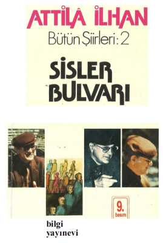

BİLGİ YAYINEVİ
SİSLER BULVARI'nda "... aşırı bir
içtenliğe dayanan anlatım, ahenkli
bir deyiş ve işlek bir dille birleşerek,
belirli bir lirizm doğurur. Ayrıca askıda
yaşamanın yarattığı heyecanlı gerilim,
sinema tekniğinden
yararlanmanın sağladığı çarpıcı görüntüler
ve yabancı ülkelerle ilgili
egzotik tasvirler, bu lirizmi etkili bir
havayla donatır. Şiirden lirizmi kovan
Garip akımına karşı bu hava bir
çeşit başkaldırma yerini tutar..."
ASIM BEZİRCİ
silezya dağları'ndan uzakta 32
ben gidip başıma belâlar aramışım
o kalıp mevlâsını bulmuş
yolumdan çekil yavrum
bağlasalar duramam
demir âsâ demir çarık dedim
neyleyim!
yolculuk dedim
ağaçlara tünedi yine akşam kargalarla bir
rüzgâr kendini yerden yere vuruyor
kırık dökük yıldızlar belirdi uzaktan
telsiz mevceleri ardım sıra koşturuyor
anamdan yolcu doğmuşum
yedi dağın yolları kalbimden geçer
salkım salkım mısralar gelir içimden
dudaklarımda yağmur damlaları
alır beni yollar beni alır gider
anamdan yolcu doğmuşum
nehirlerle birlikte denizlere kavuştum
akşam dedim
şu koca dünya dedim
ağlasam dedim
yola bir düşüldü mü ömür boyunca gidilir
ekmeğin ve şarabın peşinden
turnaların peşinden
büyük şehirler büyük aşklar
çığlık çığlığa terkedilir
ben
çocuklar gibi sevdim devler gibi ıstırab çektim
damarlarımda dünyanın bütün rüzgârları
harblere açlıklara yalnızlığıma rağmen
anamdan yolcu doğmuşum
neyleyim
gurbet dedim
vatan dedim
hürriyet dedim
yerinden kaldırmasalar
tedirgin etmeseler
armonikle ezbere polkalar çalan
alsace'lı kör kadını
türkülerin başladığı bittiği yerdeki kız
raspail bulvarı'ndan
yine gelip yine geçsen her akşam
yalnız
tedirgin etmeseler
armonik çalan bir kadını
ışıklar yola çıkınca herhangi bir akşam
beni alıp duvarların arkasına götürmeseler
seni alıp götürmeseler
zuider-zee körfezi'nin mastor bulutları
bir bir hatırında
hep böyle cam yeşili gökler boyar durur
sabahtan akşamlaradek
hollanda'lı bir ressam
orfevre rıhtımı'nda
demek
bir türkünün kıyısından çocuklar geçer
ellerini tertemiz bir yağmurda yıkamış
yalınayak macera gözlü çocuklar geçer
gülmüş gülmüş
ağlamış ağlamış
ben hızlı yıldızları deniz boylarında gördüm
ateşten oyulmuş çizgiler vardı
gözbebeklerinde
yıldız rüzgârları geçtiler
poyraz rüzgârları geçtiler
üşüdüm
büyük büyük üşüdüm
deniz fenerleri
akşamın içinden öksüz bakarlardı
palermo ve calabria sahillerinde
güvertede serseri ve mahzun gemiciler
ve gemicilerin gözbebeklerinde
bilmediğim
görmediğim
duymadığım
bir melankoli vardı
palermo ve calabria sahillerinde
deniz fenerleri
akşamın içinden öksüz bakarlardı
ben örsün kerpetenin şairi
İstanbul limanından marsilya limanına kadar
kurşun döker gibi döktüm
mısra mısra
bütün namuskâr
bütün insancıl şiirleri
bulvarlarda rüzgâr
luxembourg bahçesi'nde rüzgâr
çoluk çocuk son yaprakları savuruyor
şimdi yerin altında
bir başka dünyanın nabzı gibi vuruyor
maden işçilerinin otomatik çekiçleri
ve köstebek yavrusu metrolar
armonik sesi utangaç
uzaktan
kaldırımlarda paris manzaraları
gökyüzünde bir çabuk
bir açık
bir hızlı mavilik
bir hızlı bulutlar
kırmızı kuşlarla süslenmiş yün eldivenlerin
gökyüzü kaldırımlarken ve paris şehri
sen ve paris şehri sevgilim
ve her biri bir başka türlü çığrışan
yol-cu-luk-lar
ubangi-
şari'-
de
el değmemiş yıldızların altındaki
şehirsiz ve radyosuz dört duvarın
el değmemiş namuslu gözlerinde
ve yabani sarmaşıkları
misli görülmemiş hayranlıklar içinde
yabani yabani aydınlatan
beş alevlik ateşimiz
sonra bir adam
uğultulu ormanı
küstah çakal seslerini
ve bizzat çakalları
omuzlarına almış
yağlı simsiyah bir adam
yağlı ve kıvırcık
simsiyah sakalları
ben adam
başka adam
yürük adam
yıkmış sokaklara boylu boyunca gençliğini
ümitlerini güvercinler gibi uçurmuş
binlerce defa kaybetmiş ümitlerini
gemilerin kayboldukları yerde kaybetmiş
hain şiirlerde hain türkülerde kaybetmiş
binlerce defa yeniden bulmuş
ümitlerini
sonra fecir çığlıklarının saçlarından tutmuş
deniz gider o gider
bulut gider o gider
ben adam
başka adam
yürük adam
desen ki denizin tuzu
çiğ düşmüş kadife donlu patlıcanlar
desen ki kendilerinden karga çığlıklarıyla
kaçanlar
en fakiri en zengini çirkini ve orospusu
seni unutmuş olsun
sen ki üşümüş gökte o yalnız bulutsun
kıskanmadığın cömert bir maviliğin ortasında o
bildiğin yalnızlığın ellerinden tutmuşsun
desen ki unutulmuşsun
denizler kızılca kıyamet akıp geçiyor
zamana karşı geliyorsun
bir üç ve beş leylekler artık gitti
şimdi seni karanlıkta bir liman çekiyor
unutulduğun unutulmadığın bilinmediğin bir
liman
bir üç ve beş derken şişede rom bitti
sen yaşamaya başladığın zaman
üşümüş gökte o yalnız bulut
kendini hiç yerinde hissetmiyeceksin
keyif senin
istersen talihini billur akıntılarla bir tut
ellerini göğsüne kavuştur
doğu batı kuzey güney diyerek
koştur
bir üç ve beş istersen rom kadehleri gibi
nasıl ki unutulmuşsun
devril
ve bitir maceranı
"ölünün sandığı üstünde
onbeş kişiydik
yo ho hoy!
bir de rom şişesi
içki ve şeytan
hepimizin hakkından geldi
yo ho hoy!
bir de rom şişesi"
oralarda garip bir çakıl söyler
deniz çobanları etmiş sürülerini açıklara
sürmüştür
midyelerin gözbebeğinde orospu maviler
bağımsız batılarda yeşil zaman kalyonları
unutulmaz ve yeşil ve görünmüştür
kanrevan içinde
yalab yalab
eski deniz halkını duyarsın
dinlesen
sanki liman meyhanelerinde
kıvırcık deniz halkını
İspanyolca şarkılar İtalyanca şarap
ve allahmış gibi küfürler yaratırsın
20'nci meridyen derecesine kadar 15'nci meridyen
derecesinden
beynelmilel küfürler yaratırsın
bizzat
ve mizana direğinden
sen küfürlerin allahı çağıltıların bilmediklerimin
sen kayıp hâzinelerin allahı
arkana bakmayacak rüzgâra tükürmeyeceksin
siyah yelkenler çekilmedikçe amiralin kalem
direklerine
namuslu esintiler kıvılcımlandırmayacak
korsan gözlerini
yağmur çiğnemeye alışmadıkça
tütün çiğnemeye
akdeniz'i unutmadım
alevlere girdim ben iştahla ağladım
yaratmanın
yaratılmanın hazzı titrerdi gökyüzünde
ve dualar büyük yelkenler gibi açılırdı
sonra bakardın üç hilâl birden vardı
hayreddin şarkılarını çaylaklar gibi kollarından
uçurmuş
rüzgâr boyu çıplak ayaklarıyla Cezayirli kaptanın
leventleri
mesina boğazı'nı septe boğazı'nı ve bütün
boğazları tutmuş
çevirip gemi kervanlarını
lâ-ilâhe-il-allah
çevirip yakardı
amma şehrayinler derdin unutulmayacak
yıldızlar burç burç ve deniz fenerleri berzah
berzah
sonra tutar annibal'la birlikte roma'ya giderdin
fenikeliler alfabe taşırlardı cam taşırlardı daha
eskilerden
ejderhalar üfler deniz canavarları peydahlanırdı
Cenevizli bir forsa hayaleti rodos kalesinde
ayak bileklerinde zincir
sırtında kamçı
ve lâtince şarkılar boşanır
antonius'un gemilerinden
sen umulmaz unutulmaz tahammülfersa ve derin
bir muço kadar bir tayfanın bıyıkları kadar
hergele
büyümüş
rüzgâr gülüne ve bilmem kaç cihete sığmaz olmuş
mutlak
bir kaç asırlık korsan kaderin
kollarına ve namütenahi göğüslerine dövülmüş
yeşil ve benek benek
meleksima deniz kızları kaypak yunuslar
demek
sen bu dünyadan çocukların anladığını anlıyorsun
zaman ihtiyarlıyor ya sen hâlâ çocuksun
sen eski deniz mezarlığı korsanların ve
leventlerin
sen hayreddin şarkılarının mezarlığı
muktedir dalgalarınla sen büyük okyanus'sun
plankton canlılarının yıldızca kalabalığı
vatosların deniz nilüferlerinin
sen allahsın saltanatında ne allahlar taşıyorsun
akıntılara hükmetmiş efendi kaptanları
yıldız poyraz'da dolaşır gün batısı’nda dolaşır
bazıları
bir kaptan joy vardı ki buz denizlerine
gömmüştük
bir andersen vardı ki bir kaptan kid vardı ki
elbirliğiyle top gibi kahkahalar patlatıp
bir devler şenliğinde
savrula savrula ölmüştük
sonra kuşadası'ndaki sürmene'deki dalyanlar
hatırlanmayacak kadar eski ve güzel olmak
bütün yıldızları unutup kutup yıldızı'nı bir görüşte
tanımak
sonra sakalları tuzlanmış balıkçı italyanlar
ve sonra cehennem gibi taraz taraz
tilkinin bakır tükürdüğü bir limana
karakurum çölleriymiş gibi kupkuru inip de
gemiden
bir şarab seli hâlinde dönmenin yezitliği
hey gözünü sevdiğimin
cenup kutbu'na doğru uzandığımız zamanlar
terra del fuego'dan
yâni ateş arazisi'nden
1
gözümden yere bir damla kan damladı kırmızı
adım adım şehrin ışıklarını yaktım sokak sokak
içimde sonrasız bir yolculuğun iç bulantısı
galata rıhtımında eski bir liman kahvesi
hepyekten düşeşe günahlarım ve salkım saçak
avucumun içinde iki satır japon yazısı
bunun ne demek olduğunu öğrenemeyeceksiniz
rize'li bir tayfanın anasına avradına sövdüm
naylon bir gömlek giymişti utanıyordu
elinden tuttum gece abanoz'a götürdüm
kalbin cebimde bir yerimdeydi denize düşürdüm
köprüler açılmıştı üsküdar uyanıyordu
tophane rıhtımında oturdum yere tükürdüm
yere neden tükürdüğümü öğrenemeyeceksiniz
ellerim memelerinde kaldı yoksul türkân'ın
türkân'ı görmeyin türkân'ı köpekler gibi pişman
ben ismimi kaybetmişim yazdığım herşey yarım
haliç'te yaşlı bir şileb ağladı ben ağladım
kulaklarımın içinde çığlık çığlığa bir akşam
şu bulutları bir yerde görmüştüm tanıdım
nereden tanıdığımı öğrenemeyeceksiniz
3.cü arz derecesinde bir adam durdu
yumrukları iki balyoz gibi omzuna asılmış
bakir bir orman rüyası görüyordu
insan yiyen ağaçlar görüyordu
şehvetli yapraklarını yağmura açmış
karanlık kapkara bir yürek görüyordu
usturayla oyulmuş çıkarılmış
avuçlarında ölümünü görüyordu
İzmir'de bir gemici barında
üç sarhoş kadın ona gülmüşlerdi
sakalı vardı yirmi bir yaşında
içerken elleri titriyordu
bir sefer balear adalarında
kaçakçılıktan hapse düşmüştü
bir bıçak parıltısı gözünde kaşında
herifin birine silâh çekmişti
İzmir'de bir gemici barında
üç orospu üstüne gülmüşlerdi
3.cü arz derecesinde bir adam durdu
dünya da durmuştu artık dönmüyordu
güneş simsiyahtı görünmüyordu
aklına flamingolar gelmişti
bir martının gözleri gelmişti
lucie-anne'ın gözleri gelmişti
çok şükür ağlamasını biliyordu
son yolcunun adı attilâ ilhan'dı
miyoplu kısa boylu bir adamdı
dostu yoktu yalnızlığı vardı
yazı makinasıyla binmişti
bizimle konuşmaktan çekinmişti
gözlerini görseniz korkardınız
polis'ten kaçıyordu derdiniz
bir cinayet işlemişti derdiniz
halbuki kendinden kaçıyordu
tatyosyan'la arkadaş oldu
güvertede birlikte gördük
hırsızlama durduk dinledik
ermeni sicim gibi ağlıyordu
karısı marsilya'da kalmıştı
çocuğu karısında kalmıştı
anası İstanbul'da bekliyordu
palermo feneri parlıyordu
tatyos'u iki polis getirdiler
marsilya’daydık kıştı kıyametti
rıhtıma kelepçeli getirdiler
mistral zehir kusuyordu
deniz bildiğiniz felâketti
bölük pürçük akşam oluyordu
tatyos'u göz hapsine koydular
katiyen cıgara içiyordu
"dövülmüş süt gibi yorgunum
geceleyin kapımı çalsalar
öyle telâş telâş uyanıyorum
iflâhımı kesti fransızlar
taşların üstünde yattım
karımla konuşturmadılar
üç günde bütün ihtiyarladım
üç gün dua ettim küfrettim
beni süreceklerdi biliyordum"
tatyos'un camları kırılmıştı
vapur ecel teri döküyordu
gizli gizli şimşek çakıyordu
haham levi dua ediyordu
tatyos'un kahrını anlamıştı
allah da anlasın istiyordu
allah tatyos'u görmüyordu
ellerini kana bulamıştı
tatyos’un üç cıgarası olsa
ikisi mutlaka bizimdi
iki göz gibi birbirimize yakındık
aynı kahırla bakıyorduk
aynı sancıyı çekiyorduk
bindiğimiz bu gemi batsa
çırpına çırpına boğulsak
allah bilir ki sevinirdik
yalnız çocuklardan utanırdık
madem ki ölmemiz lâzımdı
"aşkale'de kel bir dağ vardı
nefesimi keserdi tıkanırdım
beni varlık vergisi yıktı
üç sefer askerlik ettim
gözüme kargalar konardı
elimde değildi ne yapayım
marsilya uzakta duruyordu
macera beni çekiyordu
İstanbul'u sevmiyordum
alıp başımı gidecektim"
attilâ ilhan bir şiir yazacaktı
herifin yüreği delinmişti
içi taun gibi uğulduyordu
tatyos'un kahrını yazacaktı
sırılsıklam utanacaktık
tatyos mutlaka mesut olmalıydı
ömründe bir dakika olmalıydı
o dakika mesut olmalıydı
bunun çâresine bakmalıydık
yoksa yüzümüz olmazdı
doğru dürüst ölemezdik
ölüler bizi ayıplardı
haliç'te bir vapuru vurdular dört kişi
demirlemişti eli kolu bağlıydı ağlıyordu
dört bıçak çekip vurdular dört kişi
yemyeşil bir ay gökte dağılıyordu
deli cafer İsmail tayfur ve şaşı
maktulün onbeş yıllık arkadaşı
üçü kamarot öteki aşçıbaşı
dört bıçak çekip vurdular dört kişi
cinayeti kör bir kayıkçı gördü
ben gördüm kulaklarım gördü
vapur kudurdu kuduz gibi böğürdü
hiç biriniz orada yoktunuz
demirlemişti eli kolu bağlıydı ağlıyordu
on üç damla gözyaşını saydım
allahına kitabına sövüp saydım
şafak nabız gibi atıyordu
sarhoştum kasımpaşa'daydım
hiç biriniz orada yoktunuz
haliç'te bir vapuru vurdular dört kişi
polis katilleri arıyordu
deli cafer İsmail tayfur ve şaşı
üzerime yüklediler bu işi
sarhoştum kasımpaşa'daydım
vapuru onlar vurdu ben vurmadım
cinayeti kör bir kayıkçı gördü
ben vursam kendimi vuracaktım
on iki sıfır beş'te İzmir'de bir yıldız kaydı
imbat durmuştu kan ter içindeydim
akdeniz'in elindeydim söz temsili
ışıklı bir teşbih karşıyaka'ydı
İstanbul deyip mendebur sisli
bir deniz kahvesinde içiyordum
İstanbul soluk yeşil bir tramvaydı
Sultanahmet demişti inliyordu
on iki sıfır beş'te İzmir'deydim allahım
şiir deniz gibi kımıldıyordu
on iki on beş'te İstanbul'a dağılmıştım
hilâl gibi bir kızcağız beşiktaş'ta
rüyasını dokuyordu ondan bıkmıştım
çiğ mürekkep ve aseton kokuyordu
Sarıyer'de balıkçılar denizi çekiyordu
deniz büyük büyük içini çekiyordu
on iki on beş'te bir kadeh cin parlatmıştım
kadehimi kırmıştım elim ayağım telâşta
vezüv içime çökmüştü şaşırmıştım
napoli'de gözlerim güneş diye doğmuştu
on iki on beş'te İstanbul'da allahım
gökyüzü birdenbire buz gibi soğumuştu
on iki otuz beş'te napoli garı'nda bir tren
çırpınıyordu aşağılık bir gemici barında
ben burnumu şaraba sokmuştum
katiyyen sarhoştum kirpiklerim yanıyordu
santa-lucia civarında bir kainlik
bir iştahsız orospu bulmuştum bilmem neden
uyuyup uyuyup uyanıyordu
on iki otuz beş’te napoli garı'nda ben
utanmasam bilet parası dilenecektim
paris diye ölecektim uzaktan
notre-dame'ın çığlıklarını dinliyordum
kalbim köpürmüştü anlıyordum
on iki otuz beş'te napoli de allahım
uyuyamıyordum uyuyamıyordum
on iki elli beş'te paris'te kan çıktı
içimdeki bozgun büyüyordu herkeste
bir telâş vardı herkes acıkmıştı
önüne gelen bir sual soruyordu
ben daima bir sual soruyordum
afrika bulut gibi üstüme yürüyordu
on iki elli beş'te sen uyandığın zaman
ben paris'teydim gare da l'est'de
yoksul bir oteldeydim kahrımdan
seni terketmiştim hırsımdan
kendimi içkiye vermiştim mektuplarını
yakıp yırtmıştım bütün mektuplarını
bana yazdıklarını yazmadıklarını
on iki elli beş'te içimde isyan çıktı
paris çıldırmıştı ben çıldırmıştım
artık öteki ömrümü yaşayacaktım
paris'e mahsus bir yağmur hayatı
bin dokuz yüz elli bir senesi sonunda
sokaklar benim ben sokakların
bir türkü gezinir dilimin ucunda
maubeuge sokağı'nda gelip durmuşum
otel defterine şair yazmışlar
konservatuvar talebesi komşum
rigoletto'dan prensin aryasına başlar
her sabah saatin onunda
masmavi bir sesi var hergelenin
türkü söylemek yaşamanın başka türlüsü
gönlünce bir türküsü var madem ki herkesin
bu bizim yaşamışlığımızın türküsü
üniversitenin ikinci yılında
elbet bana biraderi düşündürür
siz kendisini tanımazsınız
bafra maden içer istifham gibi yürür
şimdi ben yalnız o daha yalnız
rigoletto'nun sağında ve solunda
kalbinde dünyayı taşır bu çocuk
dünya kalbimizde taşınmaya değer
bir yılbaşı gecesi balıklar gibi sarhoştuk
la donna'yı eteğinden çekti birader
taksim harbiye yolunda
abbas ki türküler içinde yaşadı
dört bucağa tohum tohum türküler serpiyor
boulevard sebastopol’da yağmur başladı
belleville taraflarında güneş açıyor
la donna kaybolmuş barbes metrosu'nda
isminiz cahid selçuk filândı
hatırımızda öyle kalmış
biz size mırç derdik
parmaklarınızla oynardınız
suyu çırılçıplak içerdiniz
unutamam
ekmeği uzun ve sağlam çiğnemek âdetinizdi
herhangi bir memleket türküsünü tutunca
kulağından
memleketin bir dağını kafamıza yıkıvermek
mârifetinizdi
ve büyük bardakla şarab içerdiniz
sesiniz yıllanmış bir mahkûm gönlünce sıcak
bir çocuk namusunca temizdi
parmaklarınızla oynardınız
İstanbul pırıldardı gözlüklerinizde
uzak
kasımpaşa'dan haliç'i kayıkla geçerdiniz
geceyanlarından sonra bir köylülük çökerdi
üstünüze
köylüleri severdik
sâhi çerkezdiniz
efkârınız sığmazdı kaşık kadar yüzünüze
size mırç derdik
parmaklarınızla oynardınız
1
eflâtun gözlerin olduğunu bilmiyordum
gece yarısını yaşamaktan yorgunum
ayazın avucunda unutmuştun ellerini
önünden geçtiğim halde beni tanımadın
ben değiştim biliyorum hem sakal bıraktım
şiirlerim külrengi kumrular gibi uçuyorlar
bakır çalığı göklere katiyyen tahammülüm yok
hele paris'in gökleri aklımı başımdan alıyor
bana seni senden evvelki poitiers'li kızı
hatırlatıyor
ayazın avucunda unutmuştun ellerini
karanlığın arkasında kıvılcım gözlü orospular
gölgelerine yaslanmış evliya gibi bekliyorlar
ışıklar kırmızı yandığı zaman duracaksın
ben değiştim biliyorum hem sakal bıraktım
soğuk gözlerinde buğulanmıştı ölsen
tanıyamazdın
hattâ ricardo bile hani vatansız ricardo
burnumun dibinden geçti geçen gün beni
tanıyamadı
oysa au vieux châtelet'de akşam sabah beraberdik
üçümüz viyana kahvesi ve sıcak rom içerdik
üstelik o krapfen severdi güzel olurmuş rivayet
neden ve nasıl sevdiğini anlıyamadım gitti
yalnızlıktan da kurtulup yalnız kalmak isterim
montmartre metrosu civarında seni gözden
kaybettim
o zenci yine arkanda mıydı hiç dikkat etmedim
ağzında yoksul bir ıslık ıslak bir cıgara gibi
sidney bichet'nin caz havalarını çiğneyip tüküren
o saklasın varsın seni sevdiğini biliyorum ben
yüzünün renginden geliyor bütün üzüntüsü
bir gazete aldım ama evde okuyacağım
kahvelerden birine girip bir grog ısmarlasam
seni öldürmek için çareler tasarlasam
sükût bembeyaz buz tutsa bıyıklarımda
mağrur bir totem gibi sussam konuşmasam
ve türküm kaybolsa sessizliğin hırçın türküsü
ve ben unutulsam ve yazdığım şiirler
senin için yazdıklarım herkes için yazdıklarım
eski padişahlar gibi unutulsa birer birer
ve ben seni unutsam hiç hatırlamasam hiç mi hiç
ihanetini hatırlamasam şehvetini hatırlamasam
ellerim oldum olasıya seni unutsalar
yarı gecenin içinden bir zenci süt beyaz bakıyor
rue lafayette'de dünden bugüne geçiyorum
eflâtun gözlerini bir grog kadehinde unuttum
2
bu geminin yelkenlerine herifin biri paris yazmış
luxembourg garı'nın dirseğindeki çiçekçiyi
bileceksin
yeşil muşamba ceketli sarışın küskün kızcağız
en dokunulmaz kızı en temiz fikrimce paris'in
pablo'ya sorarsanız bir taksi şoförüyle yatıyor
pablo!.. ah pablo!.. onunla bir tanışsanız
önüne gelene salamanca'da bir şeyler anlatıyor
babasını orada bir duvar dibinde bırakmış
halbuki konuştuğu zaman fransız sanırsınız
saint-michel'de bir talebe kahvesindeyim yalnız
gündüz olduğu halde bütün ışıkları yakmışlar
bir cumartesi günü saat dört buçuğa beş var
ellerim kırılsa ben senin için bu şiirleri yazmasam
dinamit taşırmış gibi gözlerini taşımasam
avenue wagram'da bir akşam yeter bana ağustos'ta
yapraklara serilmiş yirmi beş franklık yıldızlar
bir mısra yeter geceleyin bir tren gibi pırıl pırıl
sen kendine yetmiyorsun hiç kimse sana yetmiyor
birini bitirmeden aklın öteki yolculukta
dün gece châtelet'de metro'nun yanıbaşında
durdum
yağmur bilmediğim başka bir gökten yağıyordu
yağmur saint-jacques kulesine doğru yağıyordu
yanımda olduğun zaman her zamankinden
yalnızım
şimdi bir nefeste cafc de l'ecluse'ü hatırladım
seine kıyısındaki küçük nehir kahvesini
kapısında bir gemici feneri asılmış duruyor
seine gemicileri her akşam burada toplanırlar
onlar için bir takım maceralar düşünürüm
seine sanki petrolmüş gibi iştahlı ve obur akıyor
dupont'daki kızlar yalnız cıgara içerek yaşıyorlar
utrillo'nun bir sokağından seni çektim çıkardım
elin yüzün kirlenmiş üstün başın toz içinde
sana mardi gras için bir japon maskesi aldım
sen bana kaptan diyorsun herkes bana kaptan
diyor
sahici bir kaptanmışım gibi tükürüyorum
3
yalın kılıç bir kasım sabahını paris'te yaşadım
sokaklarda sonbahar şiirleri salkım salkım
faubourg saint-denis'de işte yine pazar kurulmuş
beş franga çorba içtiğimiz julien'in kapısı önünde
kırmızı ve siyah ve san saçlı bir kadın durmuş
muzaffer patatesler satıyor üç renkli neşesi içinde
camların arkasında ekmekçi kızlar mavi beyaz
raflarda uzun uzun herifler gibi tâze ekmekler
üstüne bir yağmur yağdırmak hevesi uyanır içinde
ben bu mısraları yazarım tout-va-bien kahvesinde
concorde'da bütün fıskiyeler birden ayaklanacak
eğri bir demir gibi ensende hissedeceksin ebem
kuşağını
paris'in göklerinden uzanıp bir yıldız kopardım
kırmızı bir karanfilmiş gibi yıldızı saçlarına
taktım
onbeş dakika sonra bordeaux'ya bir tren kalkacak
garın merdivenlerinde benim için ağlayacaksın
ellerim yağmura açılmış sakallarım ıslak
ben ki cehennemde bir allah gibi yalnızım
st. vincent de paul kilisesi benim otelin arkasına
düşer
saat kulesi her gece uyur uykumdan uyandırıyor
her seferinde seni tekrar bordeaux'ya yolcu
ediyorum
saadetin ıstırap çekmek olduğunu ben keşfettim
çarmıhta bir isa gibi ben ıstırap çektim
bir sülfat acılığı sinerse parmaklarına şiirlerimden
gözyaşları sinerse eğer küstahça kafiyeli '
anla ki ölümle hayat arasında zaman gibi
mesudum
kendimi öldürecek haldeyim seni öldürecek
saadetimden
donna - maria! bir kahvede isyan halinde
bulduğum
çekik gözleriyle ermenice küfürler yazıp çizen
çocuk
sen! bordeaux'ya yorgun bir flâmingo gibi
yolladığım
geceleri benim için dua etmelisiniz
renault'daki grevciler toptan sokağa atıldılar
paris'in duvarlarını boydan boya afişler kapladı
seni hatırladıkça bir kadeh amagnac içerim
amagnac demek yirmi beş damla gözyaşı
demekmiş
demek her akşam yirmi beş damla gözyaşı içerim
senin dağlardan ve sarhoşlardan korktuğunu
bilirim
ben sarhoş olduğum zaman korkmuyorsun hiç
korkmuyorsun
gözlüklerim kırılmasın diye sakladığını bilirim
kalbim bakır bir mangır gibi boynuma asılmış
ondan kurtulmak için sürgünlere gitmeye razıyım
nehir gemilerinde muçoluk etmeye ölmeye
seni terketmeye razıyım parasız pulsuz çekip
gitmeye
kur'andaki bütün belâlara tevrattaki bütün belâlara
ibranice öğrenmeğe razıyım hapis yatmaya
kalbim yüzünden madem ki ellerimi parçaladım
kalemimi kırdım hayatımı çiğnedim ağladım
madem ki en büyük düşmanım kalbim benim
kendimin
onu inkâr ediyorum kalbimi inkâr ediyorum
geceleri benim için dua etmelisiniz
üçüncü paralelde eski bir dünya gibi batacağım
malgaş halkı birkaç yüzyıl hikâyemi anlatacak
4
cenova'ya indiğim sabah seni katiyyen
göremezdim
aklım başımda değildi küfür gibi huzursuzdum
herkes beni unutmuştu ben kimseyi unutmamıştım
zehra'yı unutmamıştım allahsız gözlerini
unutmamıştım
sol böğrüme sanki çıplak bir hançer saplamışlardı
şimdi benim gözlerim paris’te marivaux
sinemasında
bir çift kara maça gibi yorgun ve uykusuz
ellerim derseniz marsilya'da garsonla hesaplaşıyor
martini-cin seksen frank on frank da servis
kalbim derseniz onun nerede olduğunu
bilmiyorum
ağlıyorum onun nerede olduğunu bilmiyorum
hiç kimse kalbimin nerede olduğunu bilmiyor
nihayet seni terkedip gitti diyebilirsiniz
benim acılarım ilâhlar gibi şiirlerimi doğuruyorlar
onları karanlıkta bembeyaz gözleriyle görüyorum
karanlıkta seni görüyorum dudaklarına ellerimi
sürüyorum
seni kollarımın arasında tutuyorum ağzından
öpüyorum
ikimiz birdenbire austerlitz garı'na gidiyoruz
austerlitz garı önüne bakıyor bizden utanıyor
bir trene binmek rastgele defolup gitmek
istiyorum
trenin barında alnımı yağmurlu camlara dayamak
küstah bir duble birayla karşılıklı oturup ağlamak
kalemimde mürekkep kalmıyor insanlar beni
görmüyorlar
insanlar kendilerini kaybetmişler onlara acıyorum
ümitsiz bir akrep gibi ben aynı zamanda
mağrurum
samaritain'in ışıkları ocağıma düşmüş yalvarıyor
bir roman için fevkalâde oldukları düşünülebilir
sen bir paket gauloise aldın bir paket mavi
gauloise
bense on frangımı amerikan bilardosuna kaptırdım
seine kıyısında mırç büyük bir hayal kuruyordu
seine kıyısında üçümüz sarhoş bir hayal
kuruyorduk
mavi bir ışık vardı ben işte onu kaybettim
ben gölgemi kaybettim max jacob'un şiirlerini
sen avucunda bir lokma rüzgâr tutuyordun
bu rüzgâr için şairliğimi hınzırlığımı kaybettim
aklımdan sen geçiyorsun bir bulut gibi geçiyorsun
dün gece ezberimden çehreni defterime çizdim
sen belki hakikaten bir bulut gibi yolcusun
marsilya'da bir akşam soğuktan tir tir titredim
p. cheyney'in bir kitabını bir kahvede soluksuz
bitirdim
vapur ertesi gün saat beş'te kalkacaktı
ölümüm herkesinkinden başka türlü olacak
bunu ali ahım gibi aşikâr biliyorum
kim ne derse desin biliyorum içime gün gibi
doğuyor
on bir gün aç ve susuz gözlerinin içine bakacağım
on ikinci gün jiletle damarlarımı keseceğim
5
hep aynı manzarayı kullanmaktan bıktım usandım
bir yumruk vurdum dünden kalma bir şarkıyı
dağıttım
van gogh bana bakıyordu deli gözleriyle
bakıyordu
ellerim titriyordu bir dakar yolculuğu kuruyordum
güya bir şilebin kıç güvertesinde durmuştum
nabızlarım bir deniz fenerinin gözlerinde atıyordu
asor adalarında on sekiz mısraımı unutmuştum
onlar beni terketmişlerdi yalnız kalmıştım
mahvolmuştum
sen beni terketmiştin bunu yalnız serdümen.
biliyordu
geceleyin ışıkları söndürüp senden
bahsediyorduk
seine kitapçılarında villon’un şiirlerini buldum
nehir yürek gibi kabarmıştı rüzgâr esiyordu
bir hafta her gece villon’dan bir şeyler okudum
sen benim şiirlerimi okudukça ağlıyacaksın
seni hiç görmeseydim seni keşke hiç
görmeseydim
şu benim iki gözüm aksalardı kıpkızıl kör
olsaydım
sacre-coeur'de armonik çalsaydım dilenseydim
seni hiç görmeseydim ismini hiç duymasaydım
belki kendime göre rezilce saadetlerim olurdu
kaldırımlara renkli tebeşirle katedral resimleri
çizerdim
kaldırımlara senin resmini çizerdim herkes seni
çiğnerdi
bistroya yıkılır çırılçıplak bir quantro içerdim
lucie-anne yine gelir yine bana senden bahsederdi
lucie-anne neden gelir neden bana senden
bahsederdi
benim bu çektiklerimi bir çocuk var ki anlıyor
kendimi yerden yere vuruşumu içimdeki zehiri
bir çocuk var ki anlıyor benim gibi kahroluyor
odasında şiirlerim fukara mumlar gibi yanıyorlar
sen o çocuk değilsin sen artık çocuk değilsin
dudakların eskisi gibi beyaz değiller biliyorsun
sen gözlerini kaybettin gözlerini bunu biliyorsun
ben ki yaşadıklarımı büyük dinler gibi yaşıyorum
sen artık bir din değilsin bunu biliyorsun
eiffel’in dibinde durduk ben bir cıgara yaktım
saint-dominique sokağında şehir ışıklarını yaktı
içim büyük karanlıktı ellerimi göğe uzattım
soluk bir sisin arkasından yüzün gözüküyordu
gece inmişti takım takım yıldızlar gözüküyordu
şimdi sen başka bir şehirdeydin saçlarını kesmiştin
dudaklarını boyamıştın bu seni tamamen
değiştirmişti
rüyana erkekler giriyordu hem çıplak giriyordu
aklına ben geldiğim zaman utanıyordun
onların arasında değildim çünkü ben yoktum
ben paris'te kalmıştım adresim ezberindeydi
her cumartesi istesen bir kart gönderebilirdin
ne var ki bunu hiç bir zaman yapmayacaksın
kendimden kurtulmak için gölgemi koridorda astım
pazar günü sözleşmiştik beni mutlaka bekliyecekti
şimdi kalkıp gitsem mırç'ı bulacağım malûm
sonra vini-prix'den üç litre şarab alacağımız
şarabın yanına bir şişe rom-negrita alacağımız
sarhoş olacağımız malûm şarkı söyleyeceğimiz
sonra mırç Zehra'dan bahsedecek ben susacağım
camlardan bakınca paris'in damlarını göreceğiz
bana ancak sabahları telefon edebilirsiniz
ben hiç böylesini görmemiştim
vurdun kanıma girdin itirazım var
sımsıcak bir merhaba diyecektim
başımı usulca dizine koyacaktım
dört gün dört gece susacaktım
yağmur sönecekti yanacaktı
sameland seferden dönecekti
duvardaki saat duracaktı
kalbim kendiliğinden duracaktı
ben hiç böylesini görmemiştim
vurdun kanıma girdin itirazım var
emperyal oteli'nde bu sonbahar
bu camların nokta nokta hüznü
bu bizim berhava olmuşluğumuz
bir nokta bir hat kalmışlığımız
bu rezil bu çarşamba günü
intihar etmiş kötümser yapraklar
öksürüklü aksırıklı bu takvim
ben hiç böylesini görmemiştim
vurdun kanıma girdin itirazım var
sesleri liman sislerinde boğulur
gemiler yorgun ve uykuludur
sabahtır saat beş buçuktur
sen kollarımın arasındasın
onlar gibi değilsin sen başkasın
bu senin gözlerin gibisi yoktur
adamın rüyasına rüyasına sokulur
aklının içinde siyah bir vapur
kıvranır insaf nedir-bilmez
otelin penceresinde duracaktın
şehri karanlıkta görecektin
karanlıkta yağmuru görecektin
saçların ıslanacak ıslanacaktı
kış geceleri gibi uzun uzun
tek damla gözyaşı dökmeksizin
maria dolores ağlayacaktı
İstanbul'u yağmur tutacaktı
bütün bir gün iş arayacaktım
sana bir türkü getirecektim
kulaklarımız çınlayacaktı
emperyal oteli'nin resmini çektim
akşam saçaklarından damlıyordu
kapısında durmanı söylemiştim
yüzün zambaklara benziyordu
cumhuriyet bahçesi'nde insanlar geziyordu
tepebaşı’ndaki küçük yahudiler
asmalımesçit'teki rum kemancı
böyle rüzgârsız kalmışlığımız
bu bizim çektiğimiz sancı
el ele tutuşmuş geziyordu
gazeteler cinayeti yazıyordu
haliç'e bir avuç kan dökülmüştü
emperyal oteli'nde üç gece kaldık
fazlasına paramız,yetmiyordu
gözlerin gözlerimden gitmiyordu
dördüncü gece sokakta kaldık
karanlık bir türlü bitmiyordu
sirkeci garı’nda sabahladık
bilen bilmeyen bizi ayıpladı
halbuki kimlere kimlere başvurmadık
hiçbiri yüzümüze bakmıyordu
hiç kimse elimizden tutmuyordu
ben hiç böylesini görmemiştim
vurdun kanıma girdin kabulümsün
ne olur kira olduğunu bilsem pia'nın
ellerini bir tutsam ölsem
böyle uzak uzak seslenmese
ben bir şehre geldiğim vakit
o başka bir şehre gitmese
otelleri bomboş bulmasam
içlenip buzlu bir kadeh gibi
buğulanıp buğulanıp durmasam
ne olur sabaha karşı rıhtımda
çocuklar pia'yı görseler
bana haber salsalar bilsem
içimi büsbütün yıldız basar
bir hançer gibi çıkıp giderdim
ben bir şehre geldiğim vakit
o başka bir şehre gitmese
Singapur yolunda demeseler
bana bunu yapmasalar yorgunum
üstelik parasızım pasaportsuzum
ne olur sabaha karşı rıhtımda
seslendiğini duysam pia’nın
sırtında yoksul bir yağmurluk
çocuk gözleri büyük büyük
üşümüş ürpermiş soluk
ellerini tutabilsem pia’nın
ölsem eksiksiz ölürdüm
elinin arkasında güneş duruyordu
aylardan kasımdı üşüyorduk
ağacın biri bulvarda ölüyordu
şehrin camları kaygısız gülüyordu
her köşe başında öpüşüyorduk
sisler bulvarı'na akşam çökmüştü
omuzlarımıza çoktan çökmüştü
kesik birer kol gibi yalnızdık
dağlarda ateşler yanmıyordu
deniz fenerleri sönmüştü
birbirimizin gözlerini arıyorduk
sisler bulvarı’nda seni kaybettim
sokak lâmbaları öksürüyordu
yukarda bulutlar yürüyordu
terkedilmiş bir çocuk gibiydim
dokunsanız ağlayacaktım
yenikapı'da bir tren vardı
sisler bulvarı'nda öleceğim
sol kasığımdan vuracaklar
bulvar durağında düşeceğim
gözlüklerim kırılacaklar
sen rüyasını göreceksin
çığlık çığlığa uyanacaksın
sabah kapını çalacaklar
elinden tutup getirecekler
beni görünce taş kesileceksin
ağlamayacaksın! ağlamayacaksın!
sisler bulvarı'ndan geçtim sırsıklamdı
ıslak kaldırımlar parlıyordu
durup dururken gözlerim dalıyordu
bir bardak şarabda kayboluyordum
gece bekçilerine saati soruyordum
evime gitmekten korkuyordum
sisler boğazıma sarılmışlardı
bir gemi beni afrika'ya götürecek
ismi bilmiyorum ne olacak
kazablanka'da bir gün kalacağım
sisler bulvarı'm hatırlıyacağım
kımıızı melek şarkısından bir satır
lodos'tan bir satır yağmur'dan iki
senin kirpiklerinden bir satır
simsiyah bir satır hatırlıyacağım
seni hatırlatanın çenesini kıracağım
limanda vapurlar uğuldayacak
sisler bulvarı bir gece haykırmıştı
ağaçları yatıyordu yoksuldu
bütün yaprakları sararmıştı
bütün bir sonbahar ağlamıştı
ağlayan sanki İstanbul'du
öl desen belki ölecektim
içimde biber gibi bir kahır
bütün şiirlerimi yakacaktım
yalnızlık bana dokunuyordu
eğer sisler bulvarı olmasa
eğer bu şehirde bu bulvar olmasa
sabah ezanında yağmur yağmasa
şüphesiz bir delilik yapardım
hiç kimse beni anlıyamazdı
on beş sene hüküm giyerdim
dördüncü yılında kaçardım
belki kaçarken vururlardı
sisler bulvarı'ndan geçmediğin gün
sisler bulvarı öksüz ben öksüzüm
yağmurun altında yalnızım
ağzım elim yüzüm ıslanıyor
tren düdükleri iç içe giriyorlar
aklımı fikrimi çeliyorlar
aksaray'da ışıklar yanıyor
sisler bulvarı ayaklanıyor
artık kalbimi susturamıyorum
dikenin
kalbime battığı bir sonbahar günüdür
sen elini bulutların içinde gezdirirsin
bulutlar senin gözlerinin üstünde yürürler
içini kurtlar kemirir
bence malûmdur
buğulanmış camların arkasında masmavi yüzün
senin ateşler içinde olduğun
bence malûmdur
ellerin muhakkak çocuk elleridir
hep kimsenin bilmediği türküler düşünürsün
onlar neden daima okul türküleridir
süleymancıktan bahseder
kara toprakta açık yeşil bir yıldız gibi akıp giden
süleymancıktan
ve karınca yuvalarından bahseder
ışıksız kömürsüz karınca yuvalarından
gökyüzünde
kıpkızıl bir hilâlin kaydığını görürsün
sen ansızın gökyüzünde görünürsün
gözlerinin gözlerinin rengi
bence malûmdur
elinde değildir akşam serinliğinde üşürsün
eylül'den itibaren geceler hazindir uzundur
sokaklar yorulur uykuya varıp gelirler
sokakların üstüne bulutlar gelirler
bulutların üstüne yıldızların gözleri gelir
bir yıldız bir yıldızın ardınca gider
yıldızların kayboldukları yer
bence malûmdur
karanlıkta bir şeyler kopar dağılır
uzaktan yabancı sesler duyulur
sen elini bulutların içinde gezdirirsin
elin hayallerimi dağıtır
bilirsin
sen elini bulutların içinde gezdirirsin
1
yıldızlar eskidirler
yıldızlar çipil çipil gözleriyle bizimdir
biz böyle onlarla birlikte yaşarız
onlar bizi bilirler
söylenecek bir çift sözümüz vardır
rüzgâr cehennem kıvılcımlarıyla dolu
denizler ıssız
dağlar uyumuşlardır
gecenin içinden çekirgeler çıkar gelirler
yıldızlar bizi bilirler
saat üçdür
kan kesilmemiştir
çocuklar uyumamıştır
büyümemiştir
gramos dağları büzülür uykusunda titrer
ince ince şimşek çakar
yağmur niyetlenir
bir alman motorlu kolu yolun boyunca gider
çocuklar uyumamıştır
büyümemiştir
yol boyunca çeteler
çeteciler:
- ... yıldızlar be stelyo
üşümüş be
hani yağmur da gelecek
kozma'dan haber var mı kozma'dan
öteden
dinamitler geldi mi
yerleşti mi?
- ... virajı döner dönmez hemen...
- ... şimdi bir tavema’da olacaksın
kadehlerde reçina buz gibi
- ... sen rüzgârın getirdiği serseri bir şarkısın
- ... yıldızlar be stelyo
gitme be
- ... şimdi bir tavema'da olacaksın
- ... dur be stelyo
-... ne o?
yıldızlar eskidirler
Çizgi
nokta
sığırcık süriileri sanki ufukta
ufukta sanki martılar
üç çizgi
üç nokta
maniple
tıkırtılar
noktalar ve çizgiler fişek gibi savruluyor
gökyüzü ıslıklarla ve seslerle doluyor
çizgi
nokta
tıkırtılar
gizli antenler birbirine seslenir
titriyerek yıldızlara yükselir
kıvılcımlar uçuşur bereketli karanlıkta
mesajlar gider gelir
çizgi
nokta:
-... prag konuşuyor:
gestapo dün gece matbaamızı basmış
gazete darmadağın
çocukları götürmüşler
- ... burası marsilya
ben pierre
bernard'ın kurtuluşu yakın
benzin yüklü bir tren bulutlarda gezmeye çıktı
üç gündenberi işler yolunda gidiyor
- ... varşova'dan haber
yeniden on beş kişiyi kurşuna dizdiler
içlerinde tek partizan yoktu
kimisi ihtiyardı
kimisi çocuktu
marş söyliyerek öldüler
- ... burası anwers
bir alman denizaltı gemisi yola çıkacaktır
hareketini ayrıca bildireceğiz
yıldızlar eskidirler
onlar bizi bilirler
norveç'te sogne fiyoru
ayaklarının dibinde en çocuk sesleriyle deniz
uzaktan martılar bir garip seslenirler
havada fırtına durgunluğu
saat kaçtır bilemezsin
sana burada burunda bekle demişlerdir
yarı geceden sonra denizden bir dost gelecek
gece ayazdır için için titrersin
yıldızlar üstüne başına serpilmişlerdir
beklemek dersin saatlarca beklemek
cıgara içmeden
konuşmadan
gülmeden
saatlarca bir balıkçıl gibi düşünerek
sabırla beklemek
insanlar dersin ellerini büyük şeylere uzatmışlar
diyelim ki bombalar yağmıyacak bir gökyüzüne
meydanlarda yakılmış hürriyet bayrağı kitaplara
diyelim ki barış ve emek türküsüne
bütün enlem ve boylamlarda savaşıyoruz
halklar ayağa kalkmışlar
yıldızlar eskidirler
ince ince şimşek çakar
yağmur niyetlenir
iştvan gölgesini zincirlerine yıkmış
iştvan görünüyor gözlerini oymuşlar
sormuşlar sormuşlar sormuşlar
iştvan söylememiş
vurmuşlar
tuna köpürerek köprülerin altından akmış
tuna’nın üstünden yıldızlar akmışlar
galiba tarlalarda buğday devşiriliyormuş
tarlaların birinde şuncacık bir kız
mavi mavi bir çift göz
iştvan susmuş
söylememiş
iştvan’ı dövmüşler
iştvan görmüyor gözlerini oymuşlar
tuna boylarında küçük yeşil kanatlı tarla kuşları
heyecanlı ormanlar heyecanlı insanlar
tuna boylarında iştvan'm arkadaşları
erkek silâhları hürriyet diye dövülmüş
gözlerinde güneşin sarhoşluğu köpük köpük
yumrukları demirden delikanlılar
iştvan'a onları sormuşlar
iştvan gülmüş
söylememiş
iştvan'ı dövmüşler
zincire vurmuşlar
iştvan susmuş
söylememiş
gözlerini oymuşlar
...iştvan
... miş
rüzgâr cehennem kıvılcımlarıyla dolu
dağlar uyumuşlardır
yol boyunca bir alman motorlu kolu
yolun orta yerinde beton bir köprü vardır
köprünün altında dinamitler
dinamitlerin ucunda fitil
fitilin ucunda stelyo
ve öbür çeteciler
yıldızları sivrisinekler gibi elleriyle kovup
yalnız göz ve sinir kesilmişler
bekleşirler
- ... virajı döner dönmez hemen basacaksın
bir tek kamyon bile kurtulmamalı
stelyo ter içindedir
stelyo'nun elleri bir başka türlüdürler
hem bir uskur kadar canlıdırlar
hem ölüdürler
—... virajı döner dönmez hemen...
alman motorlu kolu virajı döner
95 beygirlik kamyonlar virajı döner
stelyo ter içindedir
stelyo'nun elleri ansızın büyürler
mermiler vızıldaşır
nasıl olursa olur
dağlar sıçrayıp gürler
yaklaşır yıldızlar yaklaşır
kayaların önünde ardında gürültüler
kamyonlar havaya savrulur
sonra bir ölüm sessizliği
sonra şimşek
ve yağmur
güneş ve ay daima doğudan yükselirler
bir gecenin bitmediğini hiç kimse görmemiş
en güzel çocuklar en zor dünyaya gelirler
ellerinin üstünde gece ne kadar geniş
suların altı ne karanlıktır
yarı geceden sonra bir dost gelecekmiş
bakarsın
kulaklarında yan geceleri vurur bütün saatlar
bütün yarı geceler kulaklarında karmakarışık
kulaklarında çekiç ve örs sesleri
kürek sesleri
karanlıkta kibrit çakılmış gibi ürkek bir ışık
açıkta belirsiz bir karaltı var
sen de bir kerecik tutar lâmbanı yakarsın
gözlerin genişler
bakarsın
bir sandal yanaşır içinden bir adam çıkar
yanma varırsın elini sıkarsın
uzakta
santa avgusta deniz feneri
alman devriyelerinin çiğ düdükleri
ikizler takımyıldızı kardeş kardeş elele tutuşmuş
yukarda ne türlü oyunlar oynanıyor
biz burda ne oyunlar oynuyoruz
şafaklar söküyor
dünya uyanıyor
erik dallarında parmak kadar serçeler
ansızın horozları duyuyoruz
2
brindisi açıklarında bir gemi batıyor
hüznünü bir çocuk tebessümü gibi suyun üstünde
bırakıp
batıyor
viyana şehri
merkezi avrupa'nın en yağmurlu gündüzünü
en üzgün yağmurunu yaşamaktadır
doğu cephesinden askerler geliyorlar
soğuk aydınlıkta kararmış
gözleri kör olmuş
mağlup
kadınsız ve tütünsüz
askerler geliyor
tozlu rüyalarının koynuna sokulmuşlar
gözbebeklerinde büyük yangınların kızıllığı kalmış
insanın gururunu kendisine hürmetini insanlığını
bir cam parçası hainliğiyle parçalaya parçalaya
gözlerine hücum eden çocuk cesedlerini
ıslıklı
uçsuz bucak ukrayna steplerini
birdenbire unutup
ışıltılı biralarla aydınlatılmış bir sofraya
yapayalnız oturmak istiyorlar
viyana'nın üstünde yağmur
katranlı bir ağ gibi dokunuyor
kimsenin kimseyi gördüğü yok
gazetelerde führer’in çılgın bakışları
kahveler kapanmış
doğu cephesinden askerler geliyorlar
soğuk aydınlıkta kararmış
gözleri kör olmuş
mağlup
kadınsız ve tütünsüz
askerler geliyor
içlerinde keskin yüzü bilenmiş bir binbaşı var
üniforması yırtık ütüsüz
ellerini koyacak yer bulamıyor
boynundaki demir haç nişanına
inanmış bir nazi olmasına rağmen
binbaşı himmerstock
içinden
utanıyor
eğer bu gemi batmasaydı
denizin
mahzun bir çocuk gibi gülümsediğini
göremiyecektik
İtalya uzakta karanlıktaydı
dağ köylerinde yosun bağlamış sefalet
kıyılarda billur bir bardak gibi kırılmış balıkçılar
elbet
İtalya ayaktaydı
bir deprem uğultusu nabızlarında
gözlerinde bir aydınlık
bir deniz türküleri aydınlığı
güneyden kuzeye bütün yolları tutmuşlar
yürekleri görülmemiş bir el bombası gibi
avuçlarında
bütün İtalyan partizanları
ayaktaydı
eğer bu gemi batıyorsa bu gemi
bunu onlar başarıyor
bu gemideki afrika mağlupları
çürümüş kavunlar gibi boğuluyorsa akdeniz'de
bunu onlar başarıyor
bir tek martı bile dönüp yüzlerine bakmıyorsa
denizin mahzun bir çocuk gibi gülümsediğini
görüyorsak
bunu onlar başarıyor
beride marsilya'da
eski rıhtım üzerinde
ağızları kahramanca sarmısak kokan
elleri gelip giden gemileri taşımaktan yorulmuş
üç liman işçisi
üç adam
biri jean
tanıyorum
öbürünün adı neydi unuttum
üçüncüsüne gelince
onun sarhoşluğundan bütün bir liman korkar
kirli sokak kızlarının küçük orospuların şaşmaz
sevgilisi
güvercin gözlü ricard
İspanyol diyorlar İtalyan diyorlar
fransızım diyor
akordeonunu futbol merakını ve küçük
orospularını bırakmış
büyük bir şarkının ilk seslerini içinde duyup
şimdilik
fransa için harb ediyor
aksilik
ne zaman bir arkadaşı afrika'ya geçirmek icab etse
aklına hep bilbao'nun gökleri gelir
hani karanlıkta ıslıkların dolaştığı bir gece
hani bir frente popular gecesi
biraz mahzun ve heyecanlı
biraz çakırkeyif
bahçede bir şezlonga uzanıp yıldızlara bakmıştı
ne gizli yıldızlarla aydınlanmış bir gökyüzüydü o
bereketli bir kadın gibi nasıl nefes alıyordu
nasıl nurlu şuurlu ve kesif
ve boşlukları avuç avuç dolduran bir iyimserlik
yukardan
ricardo'nun kucağına boşalıyordu
kardeşim viyana niçin böyle yağmur yağıyorsun
bak
binbaşı himmerstock büyük utanıyor
bilenmiş profilini vagonun kapısına balta gibi
saplayıp
neredeyse sırılsıklam ağlayacak
üstüne varman doğru mu?
yakışır mı?
o zaten utanıyor
nümberg'de yaşanmış gençliğinin anılarına
yaslanıyor
führer’in nutuklarına yahudi katliâmlarına
1940 ilkbaharına yaslanıyor
o vakit hinımerstock binbaşı değildi henüz
demir haç nişanını kazanmamıştı
ama bir panzer tankının gözetleme yerine
führer’in taa kendisi gibi geçip
kurulmuş hollanda'yı çiğnemiş
belçika'yı çiğnemiş fansa üzerine yürüyordu
kardeşim viyana
sen tutmuş yağmur yağıyorsun
olacak şey mi bu
salkım saçak iniyorsun binbaşı himmerstock'un
kahrına
nümberg gençliğinden 1940 baharından elinde
bir şey kalmıyor
panzer tümenleri peynir gibi eriyorlar
artık ne avrupa'nın başşehirlerinde deutschland’ın
uğultusu
ne muzaffer mütehakkim ayak sesleri
ne gamalı haç
ne bayraklar
şimdi yalın ve yalnız
führer'in feldmareşalların subayların ve askerlerin
nasyonal sosyalist partisi ileri gelenlerinin
hâsılı bütün kaatillerin enselerinde hissettikleri
soğuk ve merhametsiz bir namlu gibi hissettikleri
yenilmek korkusu
ölüm korkusu
hepsi bu
...ve sen kardeşim viyana
yağmur yağıyorsun
giordano falconetti
yavrum
biliyorum
ne de olsa kalbin acır
parmaklarının arasından kum süzülür gibi
saniyeler süzüldükçe
ölmek değil öldürülmek dokunur insana
biliyorum
niyetin kurtuluş gününü rüzgârlı bir dağbaşında
yaşamak
türkü söyleyip zeytin toplıyanları seyretmekti
olmayacak
bir geminin batmasına sebep olduğun için
sulhun ilk ışıklarını göremiyeceksin
seni mahkûm edecekler
vuracaklar
giordano falconetti
yavrum
bak
seninkiler yorgun argın uykuya kavuşmuşlar
stefano rüyasının pencerelerinden yıldızlara el
ediyor
işi gücü yok mudur bu yıldızların
partizanların üstüne başına neden böyle
dökülüşürler
neden harb demezler sulh demezler
gülüşürler
nöbetçi karanlıkta göz gezdiriyor
karanlıkta pırıl pırıl ıslığını gezdiriyor
tutalım ki avanti popolo deyip gezdiriyor
senin parmaklarının arasından kum süzülür gibi
yirmi üç yaşının süzüldüğünü ne bilsin
aklı fikri batırılan gemide
bir de
hani dişleri fevkalâde parlak bir antonella vardı
diyor
okul çocuklarına memelerini göstermekten
hoşlanırdı
sonra hayaldir deyip
antonella'yı kolundan tutup yanıbaşına
mavi ak deniz dikenlerinin arkasına
getiriyor
giordano falconetti
yavrum
malûm
ne de olsa kalbin acır
ölmek değil öldürülmek dokunur insana
velhâsıl ricardo
gördüğün bu kıvılcımlı gökler
ispanya’nın göklerine benziyor
bu türküler
gizli ıslıkların taşıdığı bu türküler
los cuatros generales türküsüne benziyor
öyle ki
o eski
o cumhuriyetçi madrid'in
varoşlarında dövüşüyor gibisin
zifiri bir karanlık yağıyor üstüne
toprak kımıldamıyor
milletlerarası birliğe mensup
lyon'lu dokumacılar
kendi elleriyle no passaran yazdıkları duvarların
dibinde
falanjist kurşunlarının önünde durup
mağlup göğüslerini kalbura çeviriyorlar
velhâsıl ricardo
şimdi sıra senin
şimdi sen marsilya için
o kıllı o erkek o mübarek göğsünü
bir fırtına denizinde bir siklon göğünü
kahramanca biçen bir yelken gibi açacak
kalbura çevireceksin
öleceksin be ricardo
erik dallarından çiçek fışkırdığını
bile bile
harpten sonraki ilk fransa kupasını
söz temsili bordeaux'nun kazanacağını
bile bile
la vie en rose şarkısını
bile bile
öleceksin be ricardo
ama bir küçük
ama bir beyaz saçlı adamcağız
bütün bir kuzey bölgesini almanlara haram
ettikten sonra
gestapo'nun parmakları arasından sıyrılıp
o kıllı o erkek o mübarek göğsünün arkasında
hepinizin selâmını ve zafer ümidlerini
hür fransızlara götürecek
afrika'ya götürecek
cek
hepimiz elimizden geleni yapacağız
ellerini ellerimin üstüne koyuversen
yapraklar dökülseler
sen uzaktaki yalnız çocuk
parmakları titreyen yorgun akasyalar
suyun içindeki balıkların kaskatı gözleri
senin külrengi yalnızlığını bilseler
yapraklar dökülseler
karlı silezya dağlarını gördüm
resimlerinde
şimdi artık kardeşinin olmadığı
kardeşin kurşuna dizilmiş elleri tertemiz bir
çocuk
sen uzaktaki yalnız çocuk
kardeşinin güleç yüzü aklıma gelir
resimlerinde
su var ya su
yeryüzünü bırakıp yerin altına gitmek
geceleri kırılmış camlar kadar mahzun umutsuz
yüreğinde
buz gibi bir bombardıman korkusu
su var ya su
ölmek filân
sen uzaktaki yalnız çocuk
patiska gibi canavar düdükleri yırtmasa uykunu
karanlıklar ortasında bembeyaz uyanmasan
hatırladıkça mitralyöz seslerini
yalnız olduğunu
su var ya su
suyun üstünde yüzmek suyun altında boğulmak
iğne demek iplikten geçebilir demek
insan canından geçebilir
sen uzaktaki yalnız çocuk
yeniden azraille birlikte orak biçmeğe koyulmak
şimdi onsekiz yaşında
silezya dağları'ndan uzakta
uzun söze ne hâcet
bu şehrin yağmurunu sen zaten bilirsin
yürekten göğüs geçirir gibi çiseler
kımıldar
köprünün demirlerinden suyun ağlamasını seyret
gözlerinin yaşarması var hıçkırması var
köşeyi döner dönmez tut ki viet-nam'dasın
yıldızların-kaçıştığı acımsı geceler içinde
beyaz korkunun keskin ümidin içinde
çekik gözlerin
bulutlar gibi kaydığını görsen
ya kanlı parmakların maviliğe değdiğini görsen
uzun söze ne hâcet
sen uzaktaki yalnız çocuk
kardeşinin resimlerden çıktığım görsen
delik deşik gövdesiyle türküsüz yürüdüğünü
ölüsünü görsen
görsen
doymamış çocuk ve kahraman ölüsünü
oturup senin için türkçe şiir yazmak
silezya dağları için
türkçe şiir yazmak
öksüz kimsesiz korkusuz
oysa ne sen ne ölüler türkçe biliyorsunuz
sen bir kere yine açık ve aydınlık değilsin
bilmediğim bir sokakta yağmur altında gezersin
iş dünyayı sevmekte yaşamakta çocuğum
ekmeğin içinden namuslu merminin
çekirdeğinden sert
açıkça merasimsiz ve cömert
dünyayı sevmekte
yaşamakta
onlar ne derse desin
ben türkçe yazarım ölüler kendi dilince anlar
sen diyelim pekâlâ kendi dilince anlarsın
şimdi onsekiz yaşında
silezya dağları’ndan uzakta
- babam şair bedri ilhan'a...
olmuyor neyleyim
olmuyor velinimetim efendim
olmuyor yirminci asırda
tarz-ı kadim üzre gazeller söylemek
beşiktaş'a yakın hânesi yerle yeksan oldu nedim'’im
bâki o enis-i dilden
bir yahya kemal kaldı hâl-i hâzırda
ayıptır efendim iç bâde güzel sev demek
var ise akl-ü şuurun
ayıptır bu zamanda yâr deyip yâr işitmek
kıvılcımlar kaymalı
insanlarım dedikçe şair kaleminden
zaten ömrümüz rüzgârlı sular gibi dalgalı
kimseler başalamaz medar-ı maişet derdinden
itim okur kim dinler siham-ı kazayı?
yalnız alıp verilür bir selâm kalmıştır
nâbi efendi'den
sen benim velinimetim efendim
ben senin hayr-ül-halef
sen vakt-i zamanında
uyan derdin uyan ey mest-i hâbinaz
uyan artık uyan artık
bense uyandım hâb-ı gafletten
uyan derim uyan ey esirler dünyası!
sayende sayebân olduk İstanbul şehri
sayende sebil olduk aç kaldık sefil olduk
yıldızlar dem çekti güvercinler gibi başucumuzda
ve yaktı perişan eyledi sine-i sâd-pâremizi
saplanıp hançer misâli bir hilâl
sokaklar serseri biz serseri
yüksekkaldırım'da
bir cezayir şarkısını dile getirdi plâklar
cadde-i kebir: bütün ışıklarını yakmış bir gemidir
sinemalar neredeyse boşalacaklar
vay anam vay
sen ne dersin İstanbul
sen garip bir şair olsan söyle ne halt edersin
kimin gücü yeterse kahretsin parasızlığı
sefalet akıyor gürül gürül sokaklardan
yol üstünde bir şehvet çarşısı tıklım tıklım
yol üstünde sevda pazarlığı aşk pazarlığı
kurtulamadık gitti bu denlü kepaze hayattan
hep böyle gecelerin koynunda yaşadık
geceler serseri biz serseri
karakoldaki aynada safran gibi kirli yüzümüz
gözlerimiz hasta gözleri ellerimiz hasta elleri
kırılmış kavala dönmüşüz
sen söyle serseriler kralı İstanbul
sen söyle iki gözüm
hangi merhem çâredir şu bizim yaramıza
yel üfürdü su götürdü gençliğimizi
elimiz boşa geldi meydanlarda kaldık
meydanlar serseri biz serseri
sağımız sefalet solumuz ölüm
işte geldik gidiyoruz
kahrolasın
kahrolasın İstanbul şehri
yeniden eskisinden gayrı türküler söylemeliyim
farzoldu bana devran devair yolculukları
hiç kullanılmamış maceralar peşindeyim
yağmur gelir gider ufuk malûm sarı
farzoldu bana devran devair yolculukları
siyah siyah avuçları kurşuni camlarda
susuz gözleriyle ölüler unutuldu
bir başka mezarlıktır hanidir hatıralar
hanidir mısra mısra kan kusuluyor
garipsemiş fenerler uyandı tenhalarda
fıstıkî makam üzre malûm akşam oluyor
usandık bıktık eski kahırlardan
bitmez tükenmez bir hasretlik sardı bizi
yollar tutulmuş ferhad misâli yolcu olamazsın
ölüm eskimiş kabil değil yenilemek
tersine çevirmek bir eldiven gibi içimizi
şimdi yine saatlerin ormanında tek başınasın
yollar tutulmuş ferhad misâli yolcu olamazsın
şu dağın ardında son ümidim
dağlar ve yollar yürümekle tükenmez
yeniden eskisinden gayrı türküler söylemeliyim
devran değişti ümitten ümit kesilmez
bir ağaç yaktım çınar
büyük aydınlıkta
geldi dedi
hu
odunlar çatıp üstünde bir kadın yaktım
ermiş jehanne'ın içi soldu
geldi dedi
hu
elimden kaydı dev kibritleri
tel tel kavruldu kirpiklerim
ahveş geldi dedi
hu
bir şiir tuttum delirdi
yaktı gözünü başını
geldi dedi
hu
al kalem ver kalem
hâlâ şimşek çizgileri çekiyorum
ateş yediğim alev yuttuğum
doğru
bir ben yanmıyorum
yıldızların dökülmesi hâzâ kandilli temennadır
zambaklar beyaz hâzâ beyazlar zambak
durgun sularda sivrisinekler milyon çoğalıyor
böcekler möcekler hemişe koyun koyuna
yıldızların dökülmesi hâzâ kandilli temennâdır
hep eski süvariler nal döver yorgunu yokuşa
yıldız yıldız terlemiş atları çatladı çatlayacak
eski savaş meydanı şehit gâzi yatıyor
ayıtlar söğütler hemişe koyun koyuna
bir kız doğa bir fâni göçe bir yıldız düşe
hep eski süvariler nal döver yorgunu yokuşa
sırtlanlar hatırlasın istemez hâzâ cümbüşü
canın tenden çıkması insanın insanlıktan
yüz şehit yüz yetim yüz kayıp
anam beni yetiştirdi bu ellere yolladı
sırtlanlar hatırlasın istemez hâzâ cümbüşü
bir kız doğa bir fâni göçe bir yıldız düşe
ölen öldü ölüler ihtiyarladı
çeşmehan taraflarında dızgallı’nın toprakçası
tarla desen tarla değil toprak desen toprak değil
şarken dere garben mezar çınaroğlu tam ortası
çınaroğlu'nun dibinde eskimiş bir saban korkuyor
yalnız desen yalnız değil çocuk desen çocuk değil
örtüler örtünmüş gezinir başka bulut kerhâneci
bu bulut başka bulut on sekiz başlı ummacı
içine bir herif oturmuş usturasın biler döker
yezit desen yezit değil deyyus desen deyyus değil
mezarlıkta ölüler akşam sabah üç kol çengi
trahom mavisi ölüler ferişteh mavisi ölüler
elbet çınarın dibinde eskimiş saban korkuyor
kara desen kara değil saban desen saban değil
öküzün ardında gideni lay ne korkarsın herif
çınaroğlu dedikleri bütün çeşmehan’da mâruf
ağaç desen ağaç değil insan desen insan değil
bir çınaroğlu az imiş bir çift öküz de az imiş
derede ıssızlar toplanır derenin suyu buz imiş
bu sudan içenler sulanır basıp geçenler dilenir
dere desen dere değil boru desen boru değil
elbet çınarın dibinde eskimiş saban korkuyor
söz temsili saban dedik korkan yalnız saban değil
şimdi gökler mecnun rüzgâr yolcu bulutlar
şimdi yürek sarhoş kâğıt sarhoş kalem sarhoş
minareler elpençe divan durmaktan usanmış
mavi yeşil neon lâmbaları bir sönüp bir yanıyor
son tramvaylar fren çözüp uykuya doğru uzamış
ve iliklerine kadar geçmiş efkâr
İstanbul şehri ağlıyor
ben mehtabı içmişim gökyüzü içime akmış
onlar anadan üryan ansızın karşıma çıkmışlar
bir hayal bir rüya gibi gelip elimi sıkmışlar
kimisi l'eshane’den kimisi beykoz fabrikası'ndan
gözleri nemli değilmiş ama galiba açmışlar
bu kan mıdır kızılcık mıdır mum gibi veremliler
ölüm gezer gölgeniz misâli arkanızdan
merhaba mahkûmlar kelepçeliler
yumruklarınız koparılmak istemez sınıf
kavgasından
yalnız sen yağma yağmur vurma kalbime kalbime
bulutlar seni almasın karanlık kana girmesin
çıkmış bir yol sefere çıkmaz olası rüzgâr
şimdi bütün türkiye bir anne gibi uyumuş
ah benim anadolu’m ah benim türkiye'm
yarana merhem olsam gözlerimi sürsem
bu çocuklar merinos fabrikası'nın işçileri
bursa'dan
bunlar kömür kesilmiş kalbini söker yeraltından
söndürme lâmbamı rüzgâr bulutlar beni almasın
kaldırımlar dinleniyor başını toprağa koymuş
ne zincirler örmüşüz gözyaşlarından
bırakın İstanbul şehri kana kana ağlasın
karadeniz boğazı'ndan mudanya körfezi'ne kadar
marmara denizi
çitlembik gözlü bir martı gibidir
saçları hep öyle perişan nilüfer çayı’nın
ve bulutlara tünemiş ihtiyar bir akbaba uludağ
kanatlarının altında bursa şehri yatar
bu şehir yeşillikler meyvalar sular şehridir
şimdi yine gözlerimde bursa şehri var
bursa şehri’nde sen varsın
ellerini kalbinin üstüne koyar camlardan bakarsın
ovada çırılçıplak melül mahzun kavaklar
biletçisi dumanlı bir otobüs
geçti muradiye'den
işte gece işçisi merinos fabrikası'nın
bir yağmur bulutu gibi asfalta dökülmüş
ezan sesleri dağıldı kanat kanat minarelerden
hiç bir müezzinin hiç bir surette şüphesi yoktur
bilirim bildiririm
tanrının elçisi muhammet'ten
ve bakarsın üflenir sokak lâmbaları şehrin
öksüz bir çocuk gibi sabah olur
açılmış bir dev yelpazesine benzer bursa ovası
uçsuz bucaksız
yudum yudum hürriyet damlar şehrin üstüne
cumhuriyet alanı insanlarıyla kaynaşır durur
uludağ gibi yine kalbine bakar büyük adam
zehra kardelin
sen siyah kehribar gözlü kız
rüzgârda savrulan kuşların kırmızı böceklerin
heyecanı bulut bulut dolar göğsüne
ve sana malûm olur kirşiz çapaksız
sana malûm olur bir ayna gibi devran
uludağ köpükler içinde gözlerine kar yağmış
İznik gölü'nden akıyor bir nehir gibi bu rüzgâr
yelkenleri paramparça bursa şehri'nin
bursa şehri demir taramış
böyle kavgalı günlerde sen poyraza dönersin
küfreder küfür üstüne yumrukları sıkılmış dağlar
incecikten bir zehir süzülür gönlüne
zehra kardelin
hovarda bir çan sesi gibi genişlersin günden güne
ezberinde kınından sıyrılmış bütün mısralar
şöyle bursa şehri’nden çıkar şehir şehir gezersin
gazi anadolu'm
gaziler gibi yaralıdır büyüktür
her köşesi bir çâre bekler kendi derdine
kamında sıtma göğsünde verem gözlerinde
trahom
saz benizli köylülerimiz yaprak yaprak dökülür
yol bulunmaz iz bulunmaz köylerine
telgraf tellerimiz dile gelir karış karış
kimsesizlikten hekimsizlikten
ayaklarımızın altına yatmış memleket
seslenirler çağırırlar Serik'ten Siverek'ten
hayır nedim ahmed değil
değil sevgilim eskiden
fikret namına bir şair-i cihan varmış
gençler demiş bütün ümmid-i vatan sizdedir
lâkin bir hayli dem geçmiş fikret öleli
yine günler takvimlerde harab takvimlerde sefil
âlem yine ol âlem devran yine ol devran
bir esmiş pir esmiş başımızdan kavak yelleri
biz genciz kahveler meyhaneler şahit
kanımız kararmış avuçlarımızda kadın memeleri
dilimizde ucuz şarkılar beynimizde kilit
yumruk yumruğa görüp hayran oldu bize
stadyumlar
ama sıtmalar veremler trahomlar
karanlık salonlarda mihman
kilometrelerce film gördük
telgraf telleri
ya karış karış telgraf telleri
ya anamız avradımız ya unumuz buğdayımız
ya gazi anadolu?
işte bursa şehri secdeye varmış
dilsiz bir kar dökülür işte uludağ'dan
işte kış gecesi simsiyah bayrakları açılmış
yeşil'den süzülür kollarına bir kumru iner
sen akşamlar içinde şol kumru gibi mahzun
dağıtır hülyalarını bir tren sesi gelir uzaktan
gözlerin serseri saçların rüzgârda yorgun
çıldırsın bursa ovası çıldırsın bursa şehri
körkandil kavaklar çıldırsın boydan boya
işte şehrin ışıkları soğuktan tir tir titrer
işte kahvelerde kanlı bıçaklı mahalle türküleri
giymiş mor cepkeni Süleyman durmuş ağlamaya
zehra kardelin
nasıl çıkmış bütün türkiye'yi gezmiş yüreğin
arapkir'de damarlarını kesip ağlamış kahrından
süphan dağı’nda pekmezle kar yemiştir
iki ellerinden öpmüş giresun'da fındık işçileri
erzurum'da üşümüş serçeler gibi titremiştir
artık uludağ’ı silkip atmak ister alnından
şöyle bulutsuz açık denizler gibi genişlemek
şöyle rüzgârın gözüne işlemek
ne çâre gazi anadolu bir türlü çıkmaz aklından
sen gülmek istersin ne çâre kahrolur devran
şahin kocasa da vermez avını
aslı kurt yavrusu yine kurt olur
dadaloğlu
oy bilesin ki ben ha
taş döven demir döven
oy bilesin ki ben ha
toz toprak içinde şanlı
sıfatım kat'i çopur
ellerim mağrur yağlı
oy bilesin ki ben ha
yerden cevahir söken
zincirin yitirmiş dev
erkân üzredir feryadım
grev hakkımı isterim
grev hakkımı grev
vur ha vur vur davul baş pehlivan havası
çıksın bekir osman mestanoğlu dülger ahmed
vur ha vur vur davul gürlemenin sırası
davran bre pehlivan ha ömrüne bereket
ateş alsın büklüm büklüm pazındaki kudret
davran deli fişek karayel fırtınası
çığlar devirip yenmenin güreşmenin ustası
vur ha vur vur davul dağları taşları titret
dile gelsin yusufun aliço'nun hâtırası
çıkalım hele meydana yanardağ gibi emret
hey mübarek mübarek er meydanı bu meydandır
cümle âlem birikmiş işte davullu zurnalı
herbiri bir özge diyarda baş pehlivandır
yiğitler gelir güreş tutmağa göğsü armalı .
boyları yıldız döker omuzları çifte burmalı
hoy senin pehlivan dediğin şahan olup da uçandır
rüzgâr deme buluttur bulut deme dumandır
vur ha vur davul gök yerinden kaymalı
hodri meydan! vakit tamam peşrev tamamdır
ha deyince kaldırıp kaldırıp yere vurmalı
yaşamak'lı musa'nın yaşmaklı öküzü ho
aya karşı ay gibi gövermiş boynuzu ho
gözüne yıldız üşmüş tependeki beş yıldız
bir su içer bilin mi hele yarabbi şükür
aşka gelir bilin mi ulam ulam böğürür
salyası iplik iplik boynuzları mıhladız
yaşamak'lı musa'nın yaşmaklı öküzü ho
gidinin İmansızı yabanın domuzu ho
ho öküz koca öküz ruşenâ öküz
kuyruklu dağ dedin mi musa'nın hınzır öküzü
karanlıkta pırıl pırıl burnunun teli yaldızı
güneş dökülenece sabahın körü şafaktan
şol mübarek bilin mi boyunda boyunduruk
övendire bilin mi ah derik gocunuruk
ter dökmesi bizden bereketi topraktan
garibin garib öküzü musa'nın muztar öküzü
kaşında çifte lâmelif gözünde kudretten yazı
ho öküz koca öküz ebedâ öküz
kuş uçmaz kervan geçmez karanlık tuttu yolları
gözün gönlün kararmış sen nasıl gecesin hey gidi
buğdaysız çavdarsız kara ekmeğe benzersin
yıldızların hani yıldızların çiçeklerin nerdeler
kalbin neden durmuş rüzgârı kesilmiş değirmen
gibi
suya indi çakallar suya indi söğüt dalları
barakmuslu mezarlığı kımıldanır için için
barakmuslu mezarlığı'nda seyran seyran ölüler
kuş uçmaz kervan geçmez karanlık tuttu yolları
gözün gönlün kararmış sen nasıl gecesin hey gidi
ben ne inim ne cinim ben bir garib âdemim
barakmuslu köyünden selâmsız oğlu bekir
yıkılası hânede sekiz boğaz avcuma bakar
ben kendimi toprak bilirim toprak beni baba bilir
benim köyümde avrat bile toprak gibi sevilir
ben ne inim ne cinim ben bir garib âdemim
nideyim bû mezarda babam yok yalnız anam var
dedem yok bu mezarda fukara ninem yatar
söyleyin dağlar taşlar ben selâmsız oğlu bekir
iki gözüm iki ateş parçası iki taş parçası iki elim
yıkılası hânede sekiz boğaz avcuma bakar
gece düşer barakmuslu mezarlığı dirilir
barakmuslu mezarlığı'nda seyran seyran ölüler
bir giden bir daha dönmez gitti gider
sen harami yusuf her yaranda bir çiçek açmış
sen hasretli şâkir mapuslarda ölen şâkir
evlâdım kadir nasıldı o seni dağda mı vurdular
ya hüsne gelin yar yoluna serden geçmiş
fâdime'm sıtmalar girdi kanına fâdime’m
barakmuslu mezarlığı cümlenize mekân oldu
barakmuslu mezarlığı’nda koyun koyuna girdiler
bir giden bir daha dönmez gitti gider
barakmuslu mezarlığı cümlenize mekân oldu
iki elim kızıl kanda selâmsız oğlu bekir'im
hem babam hem dedem yâdellerde kurban oldu
herkesin kökü toprakta bir ben köksüz gibiyim
şavkın yok ateşin yok sen nasıl gecesin hey gidi
gözün gönlün kararmış tadın tuzun kalmamış
yıldızların hani yıldızların çiçeklerin nerdeler
ben ne inim ne cinim selâmsız oğlu bekir'im
benim babam benim dedem yâdellerde öldüler
bir giden bir daha dönmez gitti gider
neylersin oğlum bekir bak işte ben dedenim
benim mezarını yoktur dardanos şehitlerindenim
kül oldu yirmi-üç baharım kıvırcık bir mart günü
başımı ayrı gömdüler gövdemi ayrı gömdüler
ya gâzi ya şehid diye geldik şehid olduk
iki gözümle gördüm topların ölüm tükürdüğünü
tövbeler olsun göklerin veremli gibi öksürdüğünü
neylersin oğlum bekir şehidlik alın yazısı
benim dedemin de tarabulus'tan geldi künyesi
biraderim İsmail vurulmuş akar kanları
ah şipka’nın balkanları ah şipka'nın balkanları
ninen köyde uyudu biz gâzâ'da uyuduk
kırıldı kanadımız kaldık çöllerde
ya gâzi ya şehid diye geldik şehid olduk
ben Sakarya'da bir kavak ağacıyım yel eser
inilerim
sakarya ığranıp gider ben Sakarya'yı beklerim
selâmsız duran çavuş barakmuslu’dan
ah başıma gelenler yapraklarım gözlerim
ben Sakarya'da bir kavak ağacıyım yel eser
inilerim
benim mezarım yoktur ben üçüncü taburdan
bir kahbenin kurşunu geldi gelip ciğerimi deldi
at ölür meydan kalır yiğit ölür şan kalır
ben öldüm selâmsız çavuştan bir garib kavak
kaldı
telli kavak telli kavak ne uzarsın boyuna
suya indi çakallar suya indi söğüt dalları
söğüt yaprağı narin gözlerim yanıyor gözlerim
kuş uçmaz kervan geçmez karanlık tuttu yolları
ben ne inim ne cinim siz kimsiniz kimsiniz
derviş gibi nerden gelip böyle nereye gittiniz
barakmuslu mezarlığı kımıldanır için için
benim dedem benim babam yâdellerde öldüler
yüreğimi zehir ettin sen nasıl gecesin hey gidi
kapkara gözü yaşlı mezar taşma benzersin
yıldızların hani yıldızların çiçeklerin nerdeler
ben ne inim ne cinim selâmsız oğlu bekir’im
yâdelde ölmek istemem dedem gibi babam gibi
iki elim kızıl kanda sekiz boğaz avcuma bakar
ağlar mı şipka’nın balkanları ben ağlarım
babam duran çavuş'tan kavak ağacından dilerim
telli kavak amanın telli kavak derdime bir çâre
yüreğimde bir yılan çöreklenmiş yatar
barakmuslu köyündenim selâmsız oğlu bekir'im
ben bu köyde doğmuşum bu köyde ölmek isterim
ben batılıyım
menderes yolunda kunduram kaydı
dinle mısralarımı ağlar durur gediz nehri
ben batılıyım
eski İzmir şehrinden üzüm şehrinden
anam babam menemen ovası sıtma yuvası
hey turnam garib turnam
diyâr-ı gurbetlerde durmam
haydar haydar
rüzgâr efem
rüzgâr eser üzümlerim savrulur
aman aman bergama kazan kazan ver bana
çatal matal şimşek çakar hey bulutlar devrilir
selli sulu yağmur iner şöyle bağa bostana
güneşten bir selâm gelir pekmez olur şarab olur
topraktan bir selâm gider
su gider
derman gider
aman aman bergama kazan kazan ver bana
bu yıl bereket yılıdır ağaçlar zeytinden yıkılır
zeytinyağını şeker şerbet emsali yok cihan değer
bir ayağım balıkesir bir ayağını bandırma
haydi hovardam kışlalarda talim var
bu hava aydın havası hoples de
bir hovarda yârim var
yârimin ellerini yârimin incir dalamış
arabası var aman mandası var
iki kaşı arasında damgası var
gözlerini gün bilemiş
gönlüme ateş düştü
incirler çürüdü incirlere ballık üştü
nazilli kırmış parmaklarını hoples de
iki gözü iki çeşme çine kan ağlar
menderes menderes bulanık menderes
harmandalı efem
aman allah rüzgâr gibi durmuş bakıyor
önüne katıp dağları deryaya sürmüş
çifte de yarasından kızıl kanlar akıyor
harmandalı eser esmesin mi başımızda
rüzgâr efem tosun gerdan kırıp yürüsün
davul çağırınca dengi dengine
kılıç gibi bakışları gökte bilesin
davul çağırınca dengi dengine
vur dizini zeybek toprak inlesin
ben batılıyım
menderes yolunda kunduram kaydı
diyâr-ı gurbete düştüm yârim batı'da kaldı
batı'nın taşı toprağı iliklerime geçmiş aman
hey gümbür gönül kunduranı tek tek bas
ay vurmuş da salkımları gümüşlemiş aman
ben batılıyım
ister öldür
ister as
dilâver rüzgâra çıktı
yarı gece süt dökmüş Samanyolu çolpan ve öbür
yıldızlar
büyük bayrak yeldirmeli kadınlar kızlar rüzgâra
çıktı
tütün tarlalarında.tezekler gündüzden sıcacıktı
kör başına
taşlı topraklı karanlık
mızmız ocak çekirgeleri ve kimseler
iç içe
yarı gece ıslık ıslık
kavakların üstünden çipil çipil yıldız merhabaları
elin öksüzü yetimi köroğlusu çeçen arabaları
dilâver menekşe gözlü dilâver
ölüsü kandilli beygirler
sevapsız
iç içe
üç kavaklar
kavakların berisinde leylekler
günahsız
iç içe
çeçen arabalarının garipsi çıngırakları
çeçen arabalarında tütün ırgatları
silik soluk açık mavi türküler
yol boylarında boynu bükük bir çeşme güler
ağlamış bir çocuk gibi güler
yol boylarında
türküler
dilâver rüzgâra çıktı
yarı gece süt dökmüş Samanyolu çolpan ve öbür
yıldızlar
büyük bayrak yeldirmeli kadınlar kızlar rüzgâra
çıktı
yarı gece ellerimiz kollarımız pazara çıktı
melengecin dalında çifte sığırcık diley çifte
sığırcık
ciğerime ateş değdi öley diley öley gencecik
zehir pamuk ırgatlığı gâvur gündelikçilik
rinna-rinnan-nay
yüreğim bölündü lay
damarlarım delindi
kan gider kan gider
melengecin dalında çifte saksağan diley çifte
saksağan
boynumda dönüp batır öley diley şol kahbe
devran
ağlarım bir yandan kan kusarım bir yandan
rinna-rinnan-nay
ellerim kırıldı lay
gözüm seli duruldu
kum gider kum gider
melengecin dalında çifte güvercin diley çifte
güvercin
eğnimde göynek yok öley diley ayağım yalın
ölürsem kahrımdan öldüğüm bilin
rinna-rinnan-nay
yollarım kapandı lay
bulutlar parçalandı
gün gider gün gider
melengecin dalında çifte ispinoz diley çifte
ispinoz
azıktan yetimim öley diley katıktan öksüz
dirliksiz düzensiz hanidir hürriyetsiz
rinna-rinnan-nay
künyemiz yazıldı lay
kervanımız dizildi
can gider can gider
cehennem yürekli seher seher seher’in selâmı var
şafak sökmeye durdu madra dağları uyandılar
deryanın gökçe mavisi ciğerlerine vurdu
onlar madra dağları beş aşağı beş yukarı
onlar zeytin ağaçları yeşil zeytin siyah zeytin
kül rengi zeytinlikler fukara gündelikler
bir kara somun dedim bir acı soğan dedim
cehennem yürekli seher seher kamyon gider ay
gider
içimin ataşı yollar başımın dumanı yollar
söz temsili hani içim geçmiş de bizim köyde
başlamış'da
kuruş gibi bir ay doğar ay gümüş doğar vay
gümüş batar
kamyonlar beteroğlan yaaa beteroğlan sırtı sıra
kamyonlar
kamyonların koynunda yaaa erkekler kadınlar
gözlerinden buğday geçer buğday ekmeği geçer
kurtlar gibi yola düştük yollara dökülüştük
kamyonlar delisi yollar ömrümün çizgisi yollar
emirâlem'de pamuk tarlaları yandım yakıldım
ateş böcekleri maltepe sırtlarında ateşlerimiz
karanlıkta bizden ırak ağlıyor köylerimiz
ağaç gibi karanlıkta dal gibi canavar ellerimiz
yaaa beteroğlan iki el bir baş için iki el
yaaa beteroğlan kanı kanla yurlar kanı suyla
yumazlar
onlar ırgat kamyonları boyalı kınalı kamyonlar
tozunan toprağınan kamyonlar huu kamyonlar
gözleri görmez olmadı rüzgâr dellendi durmadı
ah yollar kördüğüm geçtiğim yollar kördüğüm
uğrunca yele savrulduğum gurbetlere düştüğüm
onlar akça buğdaylar ısındı köpükleniyor
deliceler çırpındı zeytinler yandı tutuştu
ateş suya bitişti bulutlar ayaklanıyor
bir yerimden kan akıyor öfkelerim akıyor
başlamış akıyor haneleri katran kesilmiş
onlar meydan ateşleri dev nefesi ejder nefesi
onlar gündelikçiler bir deri bir kemik
cehennem yürekli seher seher seher döner ay
döner
döşün gömgök kana kesmiş yaaa beteroğlan
baskın geldi başımıza nettik neyledik bilmedik
felek canımıza kıydı ölmedik ölmedik ölmedik
hoyda bre karasaban hoyda bre demir pulluk
gün sektirme beş kıt'ada davran ekim ayında
canavar yağmurlar yemiş çalışkan toprağı gördük
karış karış tarlalar tarlalar şarktan garba
şimalden cenuba varmış fersah fersah merhaba
hakkım sana helâl olsun yeryüzünün mayası
gözleri kudretten sürmeli kara ekmeğin anası
kimi yerde öküz böğürmesi kimi yerde traktör
şarkısı
seni gördüm gönül verdim yandım çakır buğda
haydar geldi avuç avuç eserlerde savruldun
şimdicek uykuya vardın yedi kat yerin altında
uyudun hey allahım evvel baharı bekledin durdun
ispanya'da küçük asya'da macaristan'da
yıldızların kervanı başının üstünde
buğda'yım dedin bir şafak vaktinde lâfın gelişi
filizi libaslar içinde amanın ne filizi
ümit gibi serpiliverdin de maşallah ümit gibi
seni gördüm gönül verdim yandım çakır buğda
zeybekçe güneşler buram buram yağmurlar
gökyüzü efendimiz filhal gösterdi kendini
bir çengi kıyamet davullar zurnalar
göklerdeki bereket tarlalara indi
filizler aldı yürüdü cümle rençber sevindi
gömgök göverdi buğda'm gâri delikanlıdır
boyalıdır kınalıdır da tunus'ludur tahran'lıdır
estirir beste beste sağa sola yaslanır
dandini-mavzer kükresin buğda'm kurtardı
kendini
giyindi kuşandı hançerleyin başakları
biçer döver biçer bağlar haydindi üştü meydana
hasatçılar biçiciler tırpanları orakları
savul deyip giriştiler omuz omuza yanyana
türküler zincirden boşandı ter çıktı mintana
gele beyler başaklardan yağmur döküldü
oğul uşak harmanlarda harman dövüldü
kağnılarla sap çekildi saman çekildi
dastana-mavzer kükresin buğda'm erişti harmana
hoy rençberim rençberini orak vakti buğda
biçerim
su içerim ayran içerim parmaklarım kıvılcımlanır
elim ekmek tutar horantayı da beslerim
gelin buğda'm yola çıkar binbir diyâra yayılır
buğda'm varsa âlem yiğit yoksa dünya meret
dünya yıkılır
onun omuzlarında şehirler köyler ülkeler
deniz milleti gök ve kara milleti onun için
seferber
nice canlar onun için dövüştüler onun için öldüler
saçların sevdiğim buğda'm şerefli şanlıdır
şanı gür olsun yeri göğü ambarları doldursun
siloları doldursun kamımız pehlivanca doymalıdır
tırmığımız yabamız har vurup harman savursun
tarlalar döllenip üst üste doğurmalıdır
değirmenler dönmelidir değirmenler bağırmalıdır
hoyda bre karasaban hoyda bre demir pulluk
iptida buğda vardı bizler ona boyun eğdik
hoyda bre gönül verdik hoyda bre vurulduk
saçların sevdiğim buğda'm şerefli şanlıdır
dumanlı dağın çobanı garib yıldız
yağmurlar yağmasına yağıyor
rüzgârlar esmesine esiyor
ben ölmüşüm sen ölmüşsün kime ne
kimsecikler derdimizi bilmiyor
kemah pazarında sıra sıra testiler
jandarmalar anacığım evimizi bastılar
al kanlarım bulaştı kelepçenin demirine
üstelik on sekiz ay ceza kestiler
ya ben neyleyim neyleyim neyleyim
dumanlı dağın çobanı garib yıldız
şimdi ben burda yalnızım sen orda yalnız
kuş değilim lodos poyraz uçamam
demirlerin gölgesi yüreğimi karartır
ecel şerbetini yirmisinde içemem
ben ölmeylen kahbe dünya yıkılır
ferânenin kapısında demir parmaklık
hey gidi bulutlar! hey kemah yolları!
ayağımda zincir kolumda zincir
bu meret mapusluk bu ince hastalık
bilir miyim nedendir nedendir nedendir
dumanlı dağın çobanı garib yıldız
ciğerim parçalanır dağlarda akşam oldu mu
garibim zincirlerim boynuma ağır gelir
anacığım ağlamaya durdu mu
kör talih bu kimi gider kimi kalır
ben ölmeylen kahbe dünya yıkılır
derecikviran köprüsünde paldır küldür adamlar
derecikviran köprüsünü bu adamlar yaptılar
ürkek çilentiler geçti püskül saçlarından
beş parmağın izi kaldı katranlı kütüklerde
kimisi cehennemdere'den kimisi karkın'dan
derecikviran köprüsünde paldır küldür adamlar
fenerler yakıldı yıkıldı çöktü akşamlar
ciğer kebab oldu yandı gönül hasretlik ateşinde
kurbağalar bırakın beni balaban bakışlı kurbağalar
belik belik kamyon lâmbaları narköy yokuşunda
derecikviran köprüsünde paldır küldür adamlar
samanyolları huryaa yukarda mor salkımlar
derecikviran! derecikviran! yandım aman!
selâmünaleyküm deli murtaza cehennemdereli
aklım suyla bozmuş kanına sular gireli
çayın havlamaları onu çekip nerelere götürür
yıldızlar çoluk çocuk ayakta toprakta köstebekler
düşman narköy sırtlarına kum gibi şarapnel
döktürür
selâmünaleyküm deli murtaza cehennemdereli
derecikviran köprüsünde kasığından yaralı
su bulanır kan bulanır azrail başucunda
geçmiş zaman olur ki yaşandıkça ölünür
elleri lirin gibi kızmış bıyıkları toz içinde
selâmünaleyküm deli murtaza cehennemdereli
her saat çaylarda boğulur köprüyü baştan kuralı
derecikviran! derecikviran! yandım aman!
derecikviran köprüsünün düverleri köknardan
bilâl'in boyu minare bilâl'in gözleri mercan
elinden hani bir kaza çıktıydı zamanı mâzide
toprağın ırzı demek bilâl'in ırzı demek
mapusluk varmış nedek alnındaki yazıda
derecikviran köprüsünün düverleri köknardan
dağlar süt beyaz kesildi boyunca kardan
önüne düşüp de çifte jandarmanın hey felek
köprüden geçtiydi bilâl kolları kelepçeli
kurt gibi doruğunda kömür gibi bir kara çaylak
derecikviran köprüsünün düverleri köknardan
bilâl'in sesi duyulmaz bit yeniği dört duvardan
derecikviran! derecikviran! yandım aman!
kibrit çaktım cevahir yalazını yel aldı gitti
derecikviran köprüsünü bıldır sel aldı gitti
adın batsın sel cevahir'i yaktın sel
iki baş düvesi ve yetmişlik anası hilâfsız
boğuldular
ocağını söndürdün ocağına incir diktin sel
kibrit çaktım cevahir yalazını yel aldı gitti
kimisin allah aldı kimisin kul aldı gitti
düvelerden birini tee pırnallı köylüleri buldular
cevahir anasız kalsa nolur yol köprüsüz kalamaz
öteygün bu adamlar kazma kürek geldiler
kibrit çaktım cevahir yalazını yel aldı gitti
çaktığın her bir çivi ciğerini deldi gitti
derecikviran! derecikviran! yandım aman!
şol derecikviran çayı akar ekmek deyu deyu
balaban kurbağalar doğradı böldü uykuyu
derecikviran köprüsünde paldır küldür adamlar
cehennemdereli deli murtaza cevahir ve bilâl
kıvırcık göğüs kıllarında inci boncuk damlalar
şol derecikviran çayı akar ekmek deyu deyu
şol mübarek erkek eller yarattılar köprüyü
derecikviran köprüsünde paldır küldür adamlar
başını taşlara vurmuş boylu boyunca derde girmiş
devrilmiş dağlar gibi devler gibi yatanlar
şol derecikviran çayı akar ekmek deyu deyu
şol bir dilim ekmek için çile çekmek deyu deyu
derecikviran! derecikviran! yandım aman!
dağ başını efkâr almış
gümüş dere durmaz ağlar
gözyaşından kana kesmiş gözlerim
ben ağlarım çayır ağlar çimen ağlar
ağlar ağlar cihan ağlar
mızıkalar iniler ırlam ırlam dövülür
altmış üç ilimiz altmış üç yetim
yıllar gelir geçer kuşlar gelir geçer
her geçen seni bizden parça parça götürür
mustafa'm mustafa kemal’im
diz dövdüm
gözlerim şavkı aktı Sakarya'nın suyuna
Sakarya’nın suları nâmın söyleşir
hemşehrim sakarya öksüz sakarya
ankara'dan uçan kuşlar
kemal'im der günler günü çağrışır
kahrolur bulutlara karışır
gök bulut yaşmak bulut
uca dağlar dev boyunlu morca dağlar
divan durmuş bekleşir
mustafa'm mustafa kemal'im
nasıl böyle varıp geldin hoşgeldin
çıngı kaymış yalazlanmış gözlerin
şol yüzünde güneş südü sıcaklık
ellerinden öperim mustafa kemal
senin dalın yaprağın biz senin fidanların
biz bunları yapmadık
sen elbette bilirsin bilirsin mustafa kemal
elsiz ayaksız bir yeşil yılan
yaptıklarını yıkıyorlar mustafa kemal
hani bir vakitler kubilay'ı kestiler
çün buyurdun kesenleri astılar
sen uyudun asılanlar dirildi
mustafa'm mustafa kemal'im
karalar kuşanmış karadeniz akmam eliyor
dokunmayın ağlamaktan bıkmam diyor
bu gece kıyamet gecesi bu vapur bandırma vapuru
yattığı yer nur olsun mustafa kemal
ben ölümden korkmam diyor
korkmam diyen dilleri toz oldu toprak oldu
değirmen döndü dolandı yıllar oldu
bir kusur işledik bağışlar mı kimbilir
o bize öğretmedi kazan kaldırmasını
günahı vebali öğretenin boynuna
erdirip oldurana ana avrat sövmesini
yüreğim kırıldı kanım kurudu
var git karadeniz var git başımdan
mızıka çalındı düğün mü sandın
bir yol koyup gideni gelir mi sandın
mustafa'm mustafa kemal'im
ankara’nın taşına bak
tut ki baktım uzar gider efkârım
çayır ağlar çimen ağlar ben ağlarım
gözlerimin yaşına bak
ankara kalesi’nde rasattepe'de
bir akça şahan gezer dolanır
yaşın yaşın mezarını aranır
şu dünyanın işine bak
mustafa'm mustafa kemal'im
bu döşeği sen mi serdin elin dert görmesin ana
ana uyuyacağım ninni çağır danalar girsin bostana
çetin bir yörük kızı hoyrat murat dağı'ndan
bir papatya getirsin bir gelincik getirsin
elimden tutsun beni metristepe'ye götürsün
gönlümce bir hu diyeyim hısımım ali osman'a
yamacına yöresine rüzgârlı çamlar dikeyim
bu höşmerimi sen mi ettin eline sağlık ana
ana lokma dökelim aşure kaynatalım
hayır dağıtalım hayır ali osman dayıma
ördüğün bu çorabı sağlıcakla giyiyorsam
tuzladığın bu ayranı afiyetle içiyorsam
tuttuğun bu yoğurdu yoğurduğun bu ekmeği
kaynattığın bu bulguru çalakaşık yiyorsam
etime ve sütüme ineğimin ıslıklı memelerine
kabıma kaçağıma toprağıma bu benim
diyebiliyorsam
ali osman dayımın yoksul yüreği bunun bedeli
metristepe göğüne uğru yıldız uğramaya
ana bu benim yüreğim hısımım ali osman'ın
yüreği
İzmir kapısını açar açmaz
şakağına bir mermi çivilediler
bozköy'lü hasan'ın
düşmedi
öylece ayakta durur
ay ışığında baksan
görürsün
(ilk şiir kitabım duvar'la, İkincisi sisler bulvarı arasına yıllar girmiştir, iki nedenden, birincisi 1945/1955 arasının yaşantımın en hareketli dönemini oluşturmasıdır bunların, öyle, durduğum yerde duramıyor, istanbul/paris/izmir arasında öyle zigzaglı bir mekik hayatı sürüyordum ki, şiiri yaşamaktan yayımlamaya vakit kalmıyordu. İkincisi elbette, o zamanlar 'solcu' ozanların yayınevi bulamayışları, duvar'ı kendi hesabıma yayımlamıştım, parasını bir türlü toplayamadım ki, bir ikinci şiir kitabı çıkarabileyim, o zaman ne oluyor, yazıp yazıp dosyalıyorum, hem ne dosyalamak!.. o eski dosyalar hâlâ gözlerimin önündedir: şiirler numaralanmış, kronoloji sırasıyla daktilo edilmiş, altlarına nerede bitirildikleri yazılmış vs.
salim şengil, sokaktaki adam'ı yayımlayıp iyi sonuç alınca, bu defa bir şiir kitabı yayımlamak istedi, aslında elimde bir değil birkaç kitaplık birikmiş şiir bulunuyor, mecidiyeköyü'ndeki evde, oturdum, iyi kötü bir seçim yaptım, o tarihte hâlâ ilk şiir armağanının parasıyla satın aldığım kermes baby daktilomu kullanıyorum, çöktüm başına, seçtiğim şiirleri yeniden daktilo ettim, aklımca bir sıraya koydum, ankara'ya salim şengil'e gönderdim. kitabın adı sisler bulvarı olacaktı, sisler bulvarı yayımlandı, çok da ilgi gördü, gel gör ki o gün bugün içimde ukde olan bir değişiklikle: şengil, gönderdiğim müsveddeyi fazla kalın bulmuş, şiirlerden bazılarını ikinci bir şiir kitabı için ayırmıştı. kısacası, sonradan yağmur kaçağı adıyla yayımlanan şiir kitabı, gerçekte benim ilk derlediğim sisler bulvarı'nın içinden bölünmüş bir parçaydı. Başkalarını bilmem ama benim için hep öyle kaldı.
birkaç satır da, şiirlerin yazıldığı günler için ekleyeyim: paris'te plekhanov'u okumak, fransız sosyalist ozanlarının farklı tutumunu görmek, önüme yeni ufuklar açıyor, eski ’inek toplumculuğumu' sanatım için bir 'çocuk hastalığı' sayıyorum. doğasal ve toplumsal diyalektiği, bütün düzeylerde içiçe ele aldığım gibi, o zamana kadar zararlı diye elimi sürmediğim ozan ve akımlardan gelen esintileri de kişiliğimin özgün bileşimine yediriyorum, kimler mi? baudelaire'den rimbaud'ya, apollinaire'den mallarme'ye bir sürü ozan! varoluşçuluktan, gerçeküstücülük'ten, lettrisme’e kadar bir sürü akım! 40 yıllarında, İstanbul'da toplumcu ozan ağabeylerimiz, bu 'burjuva' ozanlarını bize yasaklardı, oysa paris'te çağdaş fransız şiirinin baudelaire'le başladığını, aragon'un ağzından işitmiştim. zaten o da, eluard da, tristan tzara da -ki partili ozanlardı-, dadaisme'den, gerçeküstücülük'ten geliyorlardı.
türkiye bakımından, durum nedir? 40 karanlığı'nı, chp diktası altında yaşamıştık. 1950 seçimleriyle iktidara gelen dp, truman doktrini'nin çerçevesine yerleştikten sonra, soğuk savaşı en acımasız biçimiyle sürdürmeyi iş edindi, öyle ki, sözde ana özgürlükler (roosewelt'in ünlü 'dört özgürlük'ü) herkese tanınmıştı ama, örgütlenme cesaretini gösteren ilerici parti ve demekler (türkiye sosyalist partisi, vatan partisi, barışseverler demeği vs.) sürüm sürüm süründürülüyor, toplumcu eğilimli dergi ve gazetelere hayat hakkı tanınmıyordu. bu ortamda, ben, bir yandan paris'te ve İstanbul'da nâzım hikmet'i kurtarma kampanyasına faal olarak katılıyor, bir yandan da geliştirdiğim toplumsal gerçekçi sanat tutumunu yazdığım roman, şiir ve yazılarla somutlaştırmaya çalışıyordum. soğuk savaş baskısının önemli bir etkisi, 40 yıllarından sürdüregeldiğimiz 'dolaylı' devrimci söyleyişin sürdürülmesidir, demokrasi gelmişti ama, toplumcu ozanlar diyeceklerini açık açık diyemiyorlardı. sisler bulvarı nda, yağmur kaçağı'nda böyle şiirler vardır, sırası geldikçe işaret edeceğim.
üzerinden yirmi yıldan fazla bir zaman geçtiği için, rahatlıkla söyleyebilirim, bu şiirler, inanılmaz derecede etkili olmuşlardır, garip şiiri’nin ülkemizdeki saltanatını sarsan bunlardır, ozanların üzerinde de epeyce etkileri oldu sanırım, bunu asım bezirci'nin kaleminden okumanız daha doğru olmayacak mı? bakın ne demiş: "... attilâ ilhan, sisler bulvarı'ndaki şiirlerle türk şiir tarihinde 'kendine özgü' bir çizgi çeker, bu çizgi öylesine yeni ve güçlüdür ki bir çok şairi peşinden sürükler. ilkin turgut uyar, cemal süreya, ahmet oktay, yılmaz gruda, ümid yaşar arkasından haşan Hüseyin, ergin sander, türkân ildeniz, ay han kır dar vb. sırayla etki alanından geçerler.")
* başka yerde olmak
ilk gençlik yıllarımın, bir başka heyecanı: yolculuk! o zaman dilimizden düşürmediğimiz bir deyimle 'dünya halinde yaşamak', dibi kurcalansa.
kitaplığımda bugün bile sakladığım jules verne'nin esrarlı ada'sına, r.l. stevenson'ın define adası'na kadar gider mi? bilmem, ortaokul öğrenciliğimde yazdığım ilk romanın adı, merih’e seyahat'ti, liseden siyasal nedenlerle kovulduğum için aylak geçirdiğim yıllarda (o zaman gâvurdağları'ndaki bahçe ilçesindeydik) hem ö.f. toprak'la toplumculuk ve toplumcu şiir konusunda mektuplaşıyor, hem de avunmak için serüven romanları yazıyordum, ama sanırım ki bizim kuşağı bu alanda asıl etkileyen panait istrati, o zamanlar ardı ardına yayımlanan kira kiralina, angel dayı, akdeniz, baragan'nın devedikenleri vb. kitapları olmuştur. bir de tabii jack london. deniz kurdu'nu, güneşin çocuğu’nu nasıl unuturum, tuhaf şey, düşündükçe gorkiy'i de işe katmam gerektiğini anlıyorum. öyle ya, bizim ondan ilk okuduğumuz türkçe eserler, stepte, serseriler, yol arkadaşım, sıkıntı, benim üniversitelerim vs. yazarın o şehir senin bu şehir benim rusya içinde dolaştığı yılları anlatmaz mı?
özel olarak, benim etkilendiğim bir başka şey daha vardı: sinema, yazmıştım ama, tekrarlayayım: karşıyaka'daki iki sinemada, ortaokul yıllarımda, fransız sinemasının iki savaş arası büyük ustalarını seyretmiştim, daha doğrusu seyretmişim. çünkü gördüğüm filmlerin çok büyük filmler olduğunu, yıllar sonra fransa'ya gidince anladım, yoksa kimsenin sevmediği, ama nedense benim tutulduğum birtakım filmler sanıyordum, özellikle carne’nin filmleri, le jour se leve, quai de brumes. ayrıca remorque, la belle equipe, gibraltar, la fin du jour, un carnet de bal, la grande illusion, vb. bu sinemanın şiir evrenimin kuruluşunda dolaylı ama yadsınamayacak bir etkisi olduğunu hep söylemişimdir. 'başka yerde olmak' bölümündeki şiirlerde, işte bu 'dünyayı görmeye gitmek' esprisi somutlaşıyor.
/ şahane serseri /
şiir, burhaniye'de yazılmıştır, ilk 'abbas yolcu yazılarını varlık dergisine gönderdiğim sıralar olmalı, paris'e ya gittim ya gidiyorum, bir mısraın, geceleyin, uykumun arasında oluşup beni uyandırdığını hiç unutmam: 'rüzgâr kendini yerden yere vuruyor.' bir kaç mısraıysa çok sevilmiş, çok tekrarlanmıştır: 'yola bir düşüldü mü...' ile başlayıp, '...ıstırap çektim'le biten mısralar, (a. aksan fransızcaya çevirmiştir)
/ başka adam /
ilk paris yolculuğundan sonra yazılmıştır, zira ankara vapuru ile batı akdeniz seferini yaptığım okuyunca anlaşılıyor, dahası şiirin içinde 'sevgilim' diye anette'ten söz ediyorum, onun 'kırmızı kuşlarla süslenmiş yün eldivenlerinden', anette'ten 'abbas yolcu'da da söz etmiştim, polonyalı bir mültecinin kızıydı, alliance française'de tanışmıştık, soğuk kış geceleri luxembourg bahçesi'nde dolaştığımızı hatırlıyorum: ışıklar, mavi bir sis içinde yüzerdi.
şiirde alttan alta bir toplumculuk havası esmektedir. öyle ki bu yüzden yaşar nabi'nin bazı eleştiriler yaptığını, şiiri de yayımlamadığını hatırlar gibiyim, 'örsün ve kerpetenin şairi' olmak, o günlerde, son derece belâlı bir şeydi, (talât sait halman, İngilizceye çevirmiştir)
/ bir, üç ve beş... /
pek yayılmamış bir şiir ama, ne zaman okusam etkilenirim. 50/55 yıllarının ağır baskısı altındayız. siyasal eylemi bırakmışım, mezun olmama, (hem de pekiyi dereceyle) pek birşey kalmadığı halde, fakülteye boş veriyorum, şiirlerimi yayımlayacak dergi yok. İstanbul'da, şimdi hangisinde olduğunu unuttuğum, bir pansiyonda kalıyorum. şiir, o kötümser hava içinde yazılmıştır, şimdi, ilk mısralarının yazıldığı anı, görür gibiyim: osmanbey'den harbiye’ye doğru yürüyorum, hafif yağmur çiseliyor.
/ eski deniz halkı /
ha bakın, bu şiirimi severim, oldum olası deniz tutkunuyum ya (çocukluğumda kaptan olmak istemiştim), günün birinde bir deniz şiiri yazacağım belli. 'şafak vakti dünya' deneyinde 'deryaları çıkarıyorum, demek doyurmamış, arkadan bu geliyor, halk şiirinden alınmış bir rüzgârın, eski korsan şarkılarının havasıyla kaynaştırılmasından mı doğmuştur acaba?
şiirle ilgili bir açıklama: çok sonra tanışıp dost olduğumuz nimet arzık, fransızca şiir antolojisinin sanırım ikinci basımına attilâ ilhan’dan şiir koymak gerekince, bu şiirin başına aldığım eski İngiliz korsan türküsünü çevirip koymuştur, yalnız o kadarını, bu tabii beni kimbilir kaç yüzyıllık o korsan türküsünün (define adası'nda geçer, wallace berry'nin oynadığı filmde ne güzel söylemişlerdi) ozanı yapıyordu, (şiirin bütünü talât sait halman tarafından İngilizcece çevrilmiştir)
/ liman /
liman konusu beni çekiyor, bir kere çocukluğumun filmlerinden dolayı, ayrıca 'şehir' gerçeğinin en renkli, en önemli kesimlerinden birisi olmasından. ben ki, genç kuşağın ’şehir'i şiirleştirmeye çalışan ilk ozanlarından biriyim, liman'ı es geçemezdim. şiirin ilk bölümü İstanbul, ikinci bölümü İzmir limanı üzerinedir, ama geride 'dünyayı görmeye gitmek' ’theme’i açıkça duyumsanır.
/ tatyos’un kahrı /
tatyos tatyosyan'ı ankara vapurunda tanıdım: şiir'de anlattığım gibi, otuzbeş yıldır yazdıklarımı okuyanlar, ermeni, rum, yahudi ve lövantenleri, sık sık söz konusu ettiğimi bilirler, önceleri bunu sanırım toplumculuğun bir gereği saydığımdan yapıyordum, git git, yakın tarihimizde oynadıkları önemli rollerin bilincine vardığım için yaptım, tatyos, gözümde, 'feleğin sillesini yemiş' bir adamdı, hem türkiye'de, hem fransa'da ezilmişti, yol boyunca, kıç güvertesinde uzun uzun çene çaldığımızı hatırlarım, dehşetli korkuyordu, onu yüreklendirmeye çalışmıştım, neticede, galata rıhtımında, ikimizi de polisler aldı götürdü, kurtulduktan epeyce bir zaman sonra, annesinden bir mektup aldım. yol boyunca tatyos'a yardımcı olduğum için bana teşekkür ediyordu, niye kaybettim acaba o mektubu? (’tatyos'un kahrı', peter bruveris tarafından letonca'ya çevrildi)
/ cinayet saati /
yayımlandığı sıralar hayli tartışma konusu olan bir şiir, bu şiirde, gerçeküstücü imgeyi bir gerilim içeriğini vurgulamak için kullanıyorum, yadırgandı, ama bu şiirin tutulmasına, epeyce yayılmasına engel olmadı. ('cinayet saati', peter bruveris tarafından letonca'ya çevrildi, ahmet kaya, besteledi ve kasete okudu.)
/ başka yerde olmak /
İzmir'de yazdım, ilk bakışta bir 'kaçış' şiiri izlenimini verebilir. öyle midir? pek emin değilim, daha çok, türk şiirinde o tarihte geçerli olan, belirli bir coğrafyaya bağlı, âdeta 'kapalı devre' bir şiir anlayışını aşmak çabası, elbet içinde yolculuk heyecanı, dünyayı görmeye gitmek esprisi de var, var ama, o zamana kadar türk insanının pek yaşamadığı, belki yaşayamadığı geniş açılı bir yaşantının özlemi ve saptaması da açık.
* kaptan
50'li yıllarda, (daha sonraki yıllarda da), genç kuşak neden attilâ ilhan şiirini benimsemiştir? bunu uzun süre ben de araştırdım, kafa kuruluşumun toplumcu olmasından mıdır nedir, ne yapıp yapıp, olaya rasyonel ve toplumcu bir açıklama bulmak istiyordum, duygusal açıklamalar beni doyurmuyordu, sonunda şöyle bir yere vardım, o zamana kadar türk şiirinde insan ya somut bir kırsal insandı, ya soyut bir toplumcu, oysa benim şiirimle şiire somut olarak büyük şehir, büyük şehir yaşantısı, büyük şehir yaşantısındaki insanın çeşitli durumları giriyordu, o tarihlerde türkiye’de şehirleşmenin başlamış olması, şehir gerçeğini henüz yaşamaya başlayan gençlere, bu şiiri, içeriği ve biçimiyle yaşantısına en yakın şiir diye almak olanağını tanıdı, yaşadıkları, en azından yaşamaya özendikleri bir yaşantının, çeşitli durumlarını bu şiirde buluyorlardı, onun için sevdiler, benimsediler. aynı şiirin etkisini sürdürmesi, şehirleşme gerçeğinin gittikçe hızlanan bir süreç halinde, daha da kesinleşmesinden olsa gerek, başlangıçta attilâ ilhan şiirlerinde 'kendilerini bulan' gençler, belki sadece İstanbul, İzmir ve ankara'da yaşayanlardı, ama giderek adana, bursa, trabzon, eskişehir, vb. şehirlerde yaşayanlar da onlara katılıyorlar.
'kaptan' bölümündeki şiirler, yaşadığım şehirlerin verdiği esinle, bu türde yazılmış, etkileri de oldukça derin olmuş şiirlerdir, {'liman 1 ve2’, peter bruveris'ce letonca'ya çevrildi)
/ la donna e mobili /
paris'e ilk gidişimizde, biz üç kişiydik, bunlardan birisi, kardeşim cengiz'di. üniversite'nin ikinci yılında, koptuk gittik, cengiz oradaki zorlukları, özellikle öğretiminin aksayacağını anlayınca, çok kalmadı döndü, ben, öteki arkadaşım mırç'la (asıl adı cahit), oralarda kaldım, kaldığım otelde bir konservatuvar öğrencisi var, sık sık, rigoletto'dan ünlü aryayı söyler, oysa lise yıllarında İstanbul'da, sanırım saray sinemasında (belki de şark sineması) seyrettiğimiz ünlü rigoletto filminden beri (tito gobbi oynuyordu) kardeşim cengiz, aramızda bu aryayı en güzel söylemekle ün yapmış. oğlan şarkıya başladı mı, kardeşimi hatırlıyorum.
/ mırç /
mırç, paris yolculuğunun öteki fedaisi, abbas yolcu'da uzunboylu anlatmışımdır. ('mırç', peter bruveris'ce letonca'ya çevrildi)
/ kaptan /
bir dizi olan kaptan şiirleri, kısmen paris'te yazıldı, kısmen İstanbul'da, bence ilginç yanı şurası: bu şiirleri deneyene kadar, başıboş şiir yazmak beni ürkütürdü. önceki şiirlerimdeki biçim anlayışı, içten içe son derece disiplinli bir biçim anlayışıdır, oysa, özellikle gerçeküstücü ozanları okuduktan sonra, deyişte bir rahatlık sağlamanın o kadar da fena olmayabileceği düşüncesi kafama doğdu, kaptan şiirlerinde çağrışımlar önemli rol oynar, atlamalar, birbirini izler, alışılmış mantık kesinlikle bırakılmıştır, büyük bir metropolün, bu metropolün dağdağasını yaşayan bir adamın yaşantısı, çarpıcı kesitler halinde verilmiştir.
peki niye şiirin adı kaptan? paris’te bir ara sakallıydım, eşdost bundan mı nedir, bana kaptan adını yakıştırdılar, ad oradan geliyor, kaptan şiirlerinin hepsini birden bir dergide yayımlayamadım. bazısı şurda, bazısı burda çıktı, ancak sisler bulvarı'nın ilk basımında bir araya gelebildiler, etkileyici de oldular, birçok edebiyat matinelerinde, bana bu şiir okutulmuştur. bir tarihte ankara radyosu'nda şiir saati yapan jülide gülizar, yerinde kullanılmış efektlerle, kaptan'ın tamamını radyoda okumuştu o akşam, cengiz’lerde yemekteydik, birden şiir başladı, kulak kesildik, çok etkilendim, o kadar ki, hiç tanımadığım halde, ertesi gün jülide gülizar'a bir teşekkür mektubu yazdığımı hatırlıyorum.
/ emperyal oteli /
ünü pek yaygın bir şiirdir bu, edebiyat matinelerinde kimbilir kaç kere okunmuştur, yanlış aklımda kalmadıysa, işsiz ve yoksul iki gencin kısa aşk öyküsüdür, bu niyetle yazılmıştır, öyledir de neden o kadar çok yankı yapmıştır, açıklaması zor olan burası, sanıyorum, uzaktan iki savaş arası fransız filmlerini hatırlatan atmosferi bunda etkili oldu, bir de şehirli özellikleri, sinema için elverişli yanı, su götürmez. 55'de mi, 56'da mı ne, metinle (erksan) nasıl bir film yapılabileceğini söyleşirdik: oyuncularımız da kimler, kız çolpan (ilhan), oğlan fikret (hakan).
ne kadar ilginçtir ki, 'emperyal oteli' yıllar sonra biket ilhan'ın tv’ye çektiği 'geç kalmış ölü' şiir dizisinde küp olarak ekrana geldi: oğlanı selçuk özer, kızı senem kayra oynadı.
/ pia /
mecidiyeköyü'ndeki evde başlanmış, otobüste sürdürülmüş, taksim'e geldiğimde bitirilmiş bir şiir. vatan'ın sanat yaprağı'nda yayımlandığım düşünüyorum. inanılmaz yaygınlıkta bir şiirdir, pia adı sandallara, dolmuşlara, ağır kamyonlara konulmuştur. radyoda reklam programlarına girmiştir. şimdi düşünüyorum da, yıllarca sonra 'böyle bir sevmek'te tekrar döneceğim, bir türlü elde edilemeyen hayaldeki sevgili theme'inin, şiiri bu derece etkili kıldığını daha iyi görüyorum, başı bereli, yağmurluklu genç kız tipini 'moda' eden de, bu şiir olmuştur ya!
/sisler bulvarı /
bu pek ünlü şiiri çoğu paris'te yazdığımı, adı geçen bulvarın paris bulvarlarından birisi olduğunu sanır, öyle değildir, şiiri paris dönüşü, lâleli'de, şair nigâr sokağı’nda, emekli öğretmen melâhat hanım’ın evinde pansiyoner kalırken yazdım, atatürk bulvarı üzerinde, o zaman günseli pastahanesi diye bir pastahane vardı, akşamları oraya düşer, sonbahar sisleri basıp sokak lambaları puslu puslu yandı mı, yürüyerek taa atatürk köprüsü'ne kadar inerdim, demek bu yürüyüşlerde bir yandan paris günlerini düşünüyormuşum, bir yandan sevdiğim kızı, bir yandan da yaşadığım gerilimli hayatı, daha önce, ben sana mecburum'daki bazı şiirler dolayısıyla yazdığım gibi gizli komitacılık hayatı uzunca bir süre bıçağın ağzında yaşamamı gerektirmişti, bu yaşantının izlenimlerini dolaylı olarak böyle gerilim şiirlerinde söylemeye çalıştım, o zaman ciddi olasılıklar halinde beliren bazı şeyleri, sonraki kuşakların, gündelik ve acımasız gerçekler olarak yaşamalarına ne demeli?
kırmızı melek şarkısı merak edilmiştir, yeri gelmişken söyleyeyim: porte d'orlean'da bir öğle sonu sinemaya gittik, sıradan bir fransız filmi oynuyordu, adı l'ange rouge / kırmzı melek, film önemsiz ama aynı adı taşıyan şarkıyı unutmak ne mümkün!., müzik dükkânlarına girer, elektrikli gramofonlardan aralıksız bu şarkıyı dinlerdim, ne kadar sevmişim ki işte böyle şiirin birinde kendine bir yer edinivermiş.
(sisler bulvarı'nın 1,2,3,7 ve 9. bölümleri, akil aksan'ca fransızcaya ve peter bruveris'ce tamamı letonca'ya çevrilmiştir, sisler bulvarı'nı kerem güney besteledi, o ve samime sanay kasete okudu.)
* bu dönem şiirleriyle ilgili olarak, yanlış bir izlenimi de düzeltmem gerekmiyor mu? armagnac, calvados, quantro vs... bunlar, çeşitli fransız içkileridir, şiirler boyunca anılır durur, nedense okurlar, (yalnız onlar mı, eleştiriciler de), bundan benim alkol düşkünü olduğumu çıkarmışlardır. mehmet kaplan, şiir tahlilleri'nde, attilâ ilhan şiirini ozanın alkol düşkünlüğüyle açıklamaya bile kalkıştı, oysa yok böyle birşey. türk şiirinin en 'kuru' ozanlarından biriyim ben. aram içkiyle de, cıgarayla da iyi değil, paris’te, fransız hayatının ayrılmaz parçası olan içki çeşitleri, o hayata uymak çabalarımın olağan bir sonucu olarak şiirlerime giriyor, içki içmeyi de orada öğreniyorum zaten. yemekten önce bir cinzano, yemekten sonra bir fine, hepsi o kadar, armagnac, calvados ve öbürleri de elbet tadını bildiğim şeyler ama, iş düşkünlük derecesine varmıyor, ilk yolculuğumda, paris'te cebimde rhum şişesi taşıdığım da doğru, ama niçin? dehşetli soğuk bir kıştı, kaldığım ucuz otelde kalorifer yoktu, rhum'la ısınmayı deniyorum.
* bir de şu var,-özellikle anadolu okuru, paris şiirlerinde yer alan fransızca yer, insan ve içki adlarını yadırgamıştır. bazı fransızca sözleri, mısraları da. bu yüzden eleştirirlerdi, hâlâ eleştirirler, bir çeşit züppelik gibi mi görünüyor ne? oysa değil. nasıl İstanbul'dan kars'a ya da adana'ya giden bir sanatçının şiirine yöresel dil özellikleri girerse, paris'e gideninkine de girer, o zamanlar bunu anlatamıyordum, şimdilerde anlatması kolaylaştı, zira anadolu içlerinden almanya, hollanda, fransa içlerine taşınan işçilerimiz, öyle yöresel dille karışık konuşuyorlar ki, onun yanında benim şiirler zemzemle yıkanmış kalır, böylece, yaptığımın züppelik değil, yaşanılan atmosferin getirdiği bir özellik olduğu da anlaşıldı.
*yeraltı ordusu
başkasını bilmem ama, beni, ikinci dünya savaşı adamakıllı etkilemiştir, bu etkileri, biraz gecikerek de olsa, eleştiriciler saptamışlardır, savaşın hemen ardından batı'ya gidişim, oralarda o bunalımlı yılları yaşamış olanları tanıyışım, kuşkusuz bu etkilerin önemli bir kaynağını oluşturuyor, yalnız, daha gitmeden de, savaş ve gerçeğiyle ilgili, angage şiirler yazmak, o dönemin toplumculuk gerekleri arasında idi. uluslararası faşizme karşı demokrasi ve sosyalizm cephesinin yürüttüğü savaşı destekliyor, türkiye savaşa girmese de, hangi yandan olduğumuzu belirtmek gereğini duyuyorduk. nâzım'ın, dinamo'nun, a. kadir'in, ö.f. toprak'ın bu doğrultuda bir sürü şiiri çıkmıştır.
bu bölümdeki şiirlerden, 'bence malûmdur' ve ’silezya dağlarından uzakta’ adını taşıyanları, paris’teki izlenimlere dayanılarak yazıldı, 'yeraltı ordusu' ise, daha önce de sözünü ettiğim 'şafak vakti dünya' adlı ikinci dünya savaşı destanının bir bölümüdür, bu bölümde, nazi ve faşist işgali altındaki avrupa'da gizli direniş hareketini anlatmaya çalışıyorum, tamamını yayımlamadığım, (zaten üçbin mısra kadar yazdıktan sonra, vazgeçtim, bitirmedim) destanın başarılı parçalarından sayılıyordu, onun için sisler bulvarı'na girmiştir. ('yeraltı ordusu, 2' peter bruveris tarafından letonca'ya çevrildi)
* bursa’dan yaylımateş
’bursa'dan yayhmateş' bölümündeki şiirler, daha çok, duvar şiirleriyle, yukarda gördüğümüz yeni tür attilâ ilhan şiirleri arasındaki, 'geçiş dönemi' şiirleridir, çoğunu paris yolculuğundan evvel yazdım, demek ki 48 (duvar'ın yayımlandığı tarih) ile 50 arasında yazılmıştır, öbürlerinin tersine, 'memleket gerçekleri ve sorunları' üzerinde dururlar, görüleceği gibi, dillerinde, klasik şiirimizden gelen bir hava vardır ki, epeyce sonra bu damarı geliştirip, "yasak sevişmek’ten itibaren ulusal şiir bileşiminin önemli öğeleri arasına sokacağım.
/ tarz-ı kadim /
sevilmiş bir şiirdir, yazmıştım sanırım, babam şairdi, divan tarzında gazeller yazardı; ben de elbet, hem onun şiir tutumunu yadsıyorum, hem de kendimi ona kabul ettirmeye çalışıyorum, kolay kolay etmedi ya, o ayrı sorun, tarz-ı kadim, bugünkü kafama göre, yanlış bir saldırı tutumundadır. besbelli abdülbaki gölpınarlı'nın yayımladığı 'divan edebiyatı beyanındadır' adlı kitabın etkisindeyim. klasik şiiri küçümsüyorum. neden olarak da biçimciliğini gösteriyorum, şiir, ne yazık ki, özgün biçimiyle yayımlanamamıştı. sebebi ilginç, gençler için anlatayım: gerçekte, son mısra bu kitapta yayımlandığı biçimde idi, yani 'uyan derim uyan ey esirler dünyası', buradaki 'esirler dünyası', hiç kuşkusuz ünlü enternasyonal marşı'nın başlangıcındaki 'esirler dünyası'dır, öyledir ama, gel de o zaman bunu yayımlat, baktım şiir elimde kalıyor, değiştirdim, 'esirler dünyası' yerine 'sulh-ü müebbet' sözlerini koydum, öyle çıktı, tabii canına da okunmuş oldu, doğrusu, ilk kez yayımlanıyor sanırım, ('tarz-ı kadim', peter bruveris'ce letonca'ya çevrildi)
/ kirli yüzlü melekler /
aklımca, savaş yılları İstanbul'undaki 'sefil' çocukların şiirini yazıyorum, oysa şiir, hele yayımlandıktan sonra, klasik halk ve divan edebiyatımızdaki 'kalendermeşrep' şiirlerin çizgisinde algılandı. belki de o yüzden, sevildi, tuhaftır, türk okuru, belki de uzun bir şiir geleneğinin (şarkının da) etkisinde, 'perişanlık' şiirlerini sever, bunda sakın imparatorluğun son iki yüzyılını sürekli göçler, yenilgiler, toplumsal kargaşalıklar içinde geçirmemizin rolü olmasın, toplumsal güvencesizlik, insanı kaderciliğe sürükler, buna İslam'dan gelen 'tevekkül'de katıldı mı tamam.
/ ümitten ümit kesilmez /
aynı söyleyiş, yalnız içerik, çok daha örtülü, çünkü, söze başlarken sözünü ettiğim, 'dolaylı' şiirlerden birini yazıyorum, amaç, el altından, içinde yaşadığımız baskı, eziyet, karamsarlık ortamını anlatmak, herşeye rağmen, hiç değilse ümit etmekten ümit kesilemeyeceğini aktarmak.
/ hu I
aynı damardan bir başka şiir, yalnız bu defa tasavvuf şiirinden bir rüzgâr hissediliyor, son mısra, bir önceki şiirin ümitlerini yenilemeye çabalıyor.
/ ölüler ihtiyarladı /
aynı damardan üretilmiş, üstü örtülü bir barış şiiri, üstünü örtmeye ne gerek var diyeceksiniz? var. zira barışseverler hareketi, savaş ertesinde bir sosyalist hareketi olarak belirdi, soğuk savaşa karşı, savaş düşmanlığı yapan onlar, stokholm bildirisi diye bir bildiri yayımladılar, avrupa'nın, ne avrupa'sı, dünyanın her tarafında imza toplanıyor, ilerici ozan ve yazarların görevi, barış için şiir yazmak (picasso, ünlü barış güvercinlerini o ara çizmiş, hareketin emrine vermiştir), ben de bunu deniyorum, bu kadar üstü kapalı olması, türkiye'nin kore savaşına bulaşmasından, herkes kore savaşını göklere çıkarırken, karşı çıkmak kolay mıydı bir düşünün.
/ eskimiş bir saban korkuyor /
bu şiir, aynı damardan ama, özelliği gerçeküstücülerin ecriture otomatique yöntemiyle yazılmış olması, başka deyişle, ozan kalemini esininin buyruğuna terkediyor, ne geliyorsa, yazıyor, içeriği hayli belirsiz, çokluk bilinçaltı dürtülerini taşıyan, şiirler çıkıyor ortaya, bence bu şiir onlardan birisi, sonradan bıçağın ucu'nda daha ayrıntılı olarak ele alacağım 'korku' sorununu haber veriyor. 40 ve 50 yıllarındaki baskı, toplumcuları ciddi bir ürkekliğe sevketmişti.
/ İstanbul şehri ağlıyor /
’duvar'daki bazı şiirlerin damarından üretilmiştir, bu şiir. 50 yılları başında İstanbul'un 'sefaletini' dile getirmek çabasında, bu da yayımlanırken ikinci bendin sonundaki 'sınıf kavgasından' kısmı 'hayat kavgasından' diye değiştirilerek yayımlanmıştı, dergiciler öyle istiyor, aslı bu kitaptakidir.
/ bursa'dan yaylımateş /
o tarihte zehra bursa kız lisesi'nde okuyordu, vırt zırt bu şehre gidip geliyorum, zehra benim sevgilim, henüz lisede, bense toplumcu eyleme bulaşmış bir üniversite öğrencisiyim ama, nasıl olmuşsa bir şiir armağanı kazanmışım, 'duvar' diye bir de kitap yayımlamışım, bursa'da nâzım yatmıyor mu, şehirle ilgili birşeyler yazmalıyım, hatta mümkünse içine nâzım'ı da karıştırmalıyım. bu, ’uludağ gibi yine kalbine bakar büyük adam' mısraıyla yarım yamalak yerine getiriliyor, şiirin bütününde, ülkenin çaresizliği, buna karşılık gençlerin sadece sporla, içkiyle, kadınla, sinemayla oyalandığı belirtiliyor, bundan yakınılıyor. pathetique havalı bir şiirdir, o zamanlar beğenilmişti.
* barakmuslu mezarlığı
geldik, sisler bulvarı’nın en haksızlığa uğramış bölümüne, kitap, göreceğiniz gibi, memleket gerçeklerini toplumsal açıdan hem de halk şiiri deyişiyle pekâlâ ele alıyordu ama, o dönemin eleştiricileri ozanı karalamak için bunu ısrarla görmezlikten geldi, şu satırları yazmadan, gerçekçilik savaşı yıllarının eleştirilerini bir daha gözden geçirdim, tam tersine beni, savunduğum toplumsal şiiri yapmamakla suçlamışlar, sanıyorum bunun nedeni, bir türlü içlerine sindiremedikleri alışılmışı aşmak eğilimimdi. öyle ya, toplumsal şiir yazan sanatçının yoksulluk edebiyatı yapması, büyük şehir kaçaklarından, rıhtım orospularından, gece otellerinden söz etmemesi lâzım, sanki bu oteller, bu orospular, bu kaçaklar yok, sanki onlar da toplumsal gerçeğin bir kesitini oluşturmuyor, hele sevdayı baş köşeye oturtmam, düpedüz kınanmıştır. sanki aşk ve cinsellik doğasal diyalektiğin önemli bir çelişkisini oluşturmaz. kısacası, 'inek toplumculuğu' öylesine gözlerini köreltmiş ki, öbür şiirlere ülkelerinden, pekâlâ beğenebilecekleri bu bölümdeki şiirleri de yadsıyorlar.
/ dilekçe /
şimdi her yörede patır patır grev yapılıyor ya, bizim kuşağın yaşantısında grev, erişilemeyecek kadar uzakla bir hayaldi, türk işçileri için grev hakkı isteyen bu şiiri yayımlatacak yer bulamadım. öylesine ürkütüyordu herkesi, görüleceği gibi şiir, 40 yıllarının sonuna doğru, halk şiirinden ürettiğimiz toplumcu şiir sesini taşımaktadır.
(dilekçe'yi ahmet kaya besteledi ve kasete okudu.)
/ cazgır /
pehlivanları yazmak da nereden aklıma geldi? bir kere tabii güreşin yoksul anadolu halkının ilgi duyduğu tek spor olmasından, geleneksel ve göreneksel bir yeri olmasından, ama gençlerin bilemeyeceği bir dış neden var: o tarih, türk pehlivanlarının olimpiyatlarda olsun, dünya şampiyonluklarında olsun, ortalığı duman ettiği tarih, aklımda yanlış kalmadıysa, bu şiir, İstanbul'da yapılan bir şampiyonada bizim pehlivanların -ki hepsi halk çocuklarıdır- büyük başarılarından sonra söylenmiştir.
/ öküz/
ben kırsal yörenin çocuğu değilim, anadolu'ya onbir yaşımdan sonra çıktım, ama iyice özümsedim. bahçe'deki evimizde, geceleri petrol lambası aydınlığında babama şiirler okurken, sık sık, halk edebiyatı şairlerinin öküz için yazdıklarına rastlardık, halk ozanı, üretim aracı olarak öküze 'müstesna' bir yer vermiştir, gerçekte bu şiirle ben de aynı şeyi yapmayı deniyorum, 'toplumcu' eleştirmecilerin birisi bile farketmemiştir.
eski köy mezarlıklarını gördünüz mü? hele iç anadolu'nun mezarları insanı dehşete düşürür, çocukluğumdan içimde öyle izlenimler kalmış ki, hâlâ yol boyunca uzaktan böyle bir mezarlık görsem ürperirim, ama barakmuslu mezarlığı'nı bunu anlatmak için yazmadım, aslında siyasal bir şiir bu, tam barışsever hareketi sırasında, barış dergisinin 'kore, nere?' diye başlık açıp kapatıldığı dönemde, 'edebiyat dünyası' dergisinde yayımlanmıştır. amacı da, örtülü görünse de, aslında pek açıktır, kore'de savaşmaya gönderilen türk köylüsü adına, barakmuslu mezarlığı'nı dolaşan, bütün hısımlarının çeşitli cephelerde öldüklerini düşünen selâmsız oğlu bekir, 'ben bu köyde doğmuşum, bu köyde ölmek isterim' demektedir, daha ne desin? resmi makamlar, slogancı bir edayla yazılmadığı için, şiiri atladı, işin tuhafı, toplumcu takımı da atladı, yalnız aziz arkadaşım hasan tanrıkut tadına varmıştı, zaten şiiri ona ithaf etmiştim.
/ batı /
bizim ege yöresine güzelleme, sağı solu kurcaladıkça görüyorum ki, türk halk şiirinde hemen her köşe ele alınmış da, batı anadolu'ya pek dokunulmamış. üvey evlat gibi bir hali var. osmanlı döneminde, oraları İslam olmayan ahaliyle dolu olduğu için desem, yanlış, orta anadolu'da, doğu anadolu'da da 'gayr-ı müslüm' ahali az sayılmaz, oysa oraları için neler yazmışlar, neler, besbelli olayın asıl nedeni, ege yöresinden, klasik anlamda fazla 'âşık' çıkmamış olması, aklımca bu şiirle o eksikliği gideriyorum.
/ tütünkeş /
Sındırgı'da, ya da oradan edinilmiş izlenimlerle, İstanbul'da yazılmış bir şiir, babam Sındırgı'ya atanınca, tütün gerçeğinin göbeğine düştük, tütün ırgatları üzerine, toplumcu geçinen bir ozanın bir- şeyler yazmaması düşünülebilir mi? yazdım elbette. bu o şiirlerin ilkidir, ama sonu değil.
/ rinna-rinnan-nay I
bütünüyle halk ağzı, hatta halk türküsü ağzı bir şiir ki, pamuk ırgatlarının çilesini yansıtıyor, biçim olarak, handiyse kusursuz denebilecek bir düzendedir, türkü ritmi yüksek sesle okundu mu hemen hissedilir, nitekim timur selçuk bunu farketmiş, şiiri bestelemiş, demokrat İzmir'de çalışırken, bir gün telefon etmiş, diğer üç şiirle birlikte bunu da bestelediğini söylemişti.
/ iskeletler dansı /
buyurun tarım ırgatlarını konu edinen bir şiir daha, yine aynı halk ağzıyla, biraz türküye, biraz tekerlemeye yakın bir deyişle düzenlenmiş, sabah ezanı kasabadan, ya da köylerden, kadınlı erkekli ırgatları yüklenip tarlalara götüren kamyonlar kimi etkilemez? beni de etkilerdi, o kadar etkilerdi ki, günün birinde bu şiir âdeta kendiliğinden doğdu.
/ buğda /
bence değeri bilinmemiş bir şiir de budur. buğda, toplumcu ozanın, üretim sürecini şiirleştirmesi. dikkatle okundu mu, tohumdan hasada buğday üretiminin şarkısını söylediğim hemen farkedilir. başka deyişle, yaygın yoksulluk edebiyatı yapacağıma, üretim sürecini anadolu gerçeğinde, anadolu ağzıyla yansıtmaya çalışıyorum.
/ uzun hava /
uzun hava'nın ne olduğunu anlatmaya gerek yok. halk türküsü ağzıyla, şiirde, insan gerçeğinin (isterseniz birey gerçeğinin de diyebilirsiniz) önemini belirtmeye uğraşıyorum, ünlü bir uzun hava vardır, onunla tartıştığımı bile söyleyebilirsiniz, o uzun hava’nın nakaratı şu: 'bir de ben ölmeylen dünya yıkılmaz', acı, acımasız gerçek, oysa ben oldum olası, nesnel dünyanın yıkılmayışına mukabil, öznel dünyanın yıkıldığı gerçeğini çizerim, şiir bunu söylüyor: ’ben ölmeylen kahbe dünya yıkılır'. demek ki, nesnellik adına öznelliğin hiçe sayılmasına karşı çıkıyorum.
/ derecikviran /
buğda, nasıl insanın doğadan hayatını üretme sürecini yansıtıyorsa, derecikviran da öyle, doğa/ insan çelişkisini anlatıyor, hiç olmazsa, şiirin yaslandığı diyalektik bu. anadolu'da halkın hem susuzluktan kırıldığı, hem de sellerden battığı bilinen bir gerçek, derecikviran çayı üzerine köprü kuran ırgatlar, hem doğayı evcilleştirme çabası içindedirler, hem de çağrışımlarla bireysel yaşantılarının geçmişine dönerler, o sıralar, ısrarla, türkü ritmini şiire yedirmeye çalışıyordum, bu şiir de onlardan birisi, tekrarlar, ritmin hareketlenmesine yardımcı oluyor, söyleyiş, klasik halk şiiri söyleyişinin günümüze uyarlanmış biçimidir, nasıl ki sonraları aynı şeyi divan şiiri için de deneyip, o söyleyişi günümüze uyarlayacağım.
/ mustafa kemal /
ünlü bir şiir bu, ölüm yıldönümlerinde gazetelerde yayımlanır, okullarda okunur, ilk yayımladığım yıl (ki mustafa kemal'in ölümünün onuncu yıldönümü idi) etrafı biraz şaşırtmıştı, sebebi şu. chp diktası döneminde atatürk şiirleri yoğun bir dalkavukluk, bir 'güneş saçlar deniz gözler’ şiiridir. behçet kemal, paşa'nın sevilmemesi için lâzım gelen herşeyi yazmıştı. 40 yıllarının solcuları, mustafa kemal'i anti-emperyalist bir lider olarak tutar, dahası İnönü diktasına karşı savunurdu, bu şiirde ben de ölüm yıldönümünde paşa'ya bir çeşit durum raporu veriyorum, iki ana fikir kendini belli ediyor, birisi, o yıllarda sık sık teki arlanan gençlik mitingleri dolayısıyla, mustafa kemal den özür dileme, zira uzun yıllar türkiye'de gençlik mitingleri, öğrenci gösterileri, iktidar tarafından düzenlenmiş faşizan karakterli eylemlerdi, amaçlan ilericileri sindirmekti, şiir yazıldığı yıllarda bu mitinglerle tan'ı, yenidünya'yı yıkmışlar, emekçi partisini ve sosyalist partisini duman etmişlerdir.
ikinci fikir, irticaın hortlaması, demokrat parti hareketiyle birlikte şeriatçılık çeşitli biçimlerde kendini göstermişti. sosyalistlik, elbet demokratik devrimi, demokratik devrim ise laikliği içerir, sosyalistin laik olmaması olası mı? bunu şunun için yazıyorum, son yıllarda geçmişimize sahip çıkalım deyince, kimi şeriatçılar beni içten olmamakla suçladılar, çünkü bir tarihte İslamcılığa 'bir yeşil yılan demişim, 'hangi sağ'da uzun uzun açıkladım ya, iki satır da burda diyeyim, geçmişe sahip çıkmak başka şey, geçmişi şeriata dayanarak yeniden ihya etmeye kalkışmak başka şey, ilki ileriye dönük ulusal bir bileşim çabası, İkincisi düpedüz irtica, laiklik konusunda sosyalistlerin ödün vermeleri söz konusu olamaz.
/ hayır /
anti-emperyalist olmaya çalışan bir şiir, türkiye emperyalist/kapitalist ’sistem’e iyice koşulduktan sonra, kurtuluş savaşı’nın anti-emperyalist karakterini belirtmek, ’müdafaa-i hukuk doktrinini’ savunmak başlıca işlerimden olmuştur, burada o işi şiirle yapıyorum, son iki mısra, türk insanının kuva-yı milliye yüreğini hâlâ taşıdığını, metristepe göğüne uğru (hırsız/yabancı) yıldız uğratmayacağını vurguluyor, o sıralarda, amerikanlar bütün savunma düzenimize elkoymuşlardı.
/ dokuz eylül /
aynı espride kısa bir şiir, vurucu gücü yüksek bir imge taşıdığı için severim, kuva-yı milliye ruhunun, ayakta durduğunu anlatmaya çalışmışım.